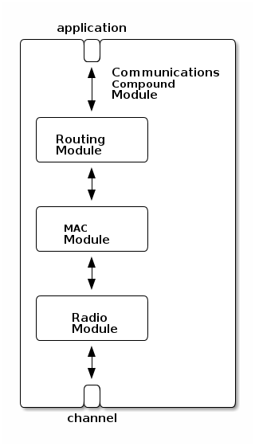

Lisp Educational Network Simulator (LENS)
Table of Contents
- 1 Summary
- 2 Installation
- 3 Using LENS
- 4 Internal Package:
lens- 4.1 Description
- 4.2 External Symbols
- 4.2.1 External Classes
- 4.2.1.1 External Class:
channel - 4.2.1.2 External Class:
component - 4.2.1.3 External Class:
compound-module - 4.2.1.4 External Class:
compound-module-class - 4.2.1.5 External Class:
delay-channel - 4.2.1.6 External Class:
entity-with-signals - 4.2.1.7 External Class:
gate - 4.2.1.8 External Class:
gate-slot - 4.2.1.9 External Class:
histogram - 4.2.1.10 External Class:
history-buffer - 4.2.1.11 External Class:
ideal-channel - 4.2.1.12 External Class:
indexed-count-recorder - 4.2.1.13 External Class:
last-value - 4.2.1.14 External Class:
mean - 4.2.1.15 External Class:
message - 4.2.1.16 External Class:
module - 4.2.1.17 External Class:
module-class - 4.2.1.18 External Class:
mt-random-state - 4.2.1.19 External Class:
named-object - 4.2.1.20 External Class:
network - 4.2.1.21 External Class:
owned-object - 4.2.1.22 External Class:
packet - 4.2.1.23 External Class:
packet-buffer - 4.2.1.24 External Class:
parameter-class - 4.2.1.25 External Class:
parameter-object - 4.2.1.26 External Class:
simulation - 4.2.1.27 External Class:
simulation-condition - 4.2.1.28 External Class:
stddev - 4.2.1.29 External Class:
sum - 4.2.1.30 External Class:
timeavg - 4.2.1.31 External Class:
timer-message - 4.2.1.32 External Class:
transmission-channel - 4.2.1.33 External Class:
unknown-message - 4.2.1.34 External Class:
with-timers
- 4.2.1.1 External Class:
- 4.2.2 External Structures
- 4.2.3 External Types
- 4.2.4 External Constants
- 4.2.5 External Global Variables
- 4.2.6 External Macros
- 4.2.7 External Functions
- 4.2.7.1 External Function:
<= - 4.2.7.2 External Function:
<= - 4.2.7.3 External Function:
arrival-time - 4.2.7.4 External Function:
arrived - 4.2.7.5 External Function:
average-queue-time - 4.2.7.6 External Function:
bernoulli - 4.2.7.7 External Function:
beta - 4.2.7.8 External Function:
binomial - 4.2.7.9 External Function:
bit-error-p - 4.2.7.10 External Function:
bit-length - 4.2.7.11 External Function:
buffer-size - 4.2.7.12 External Function:
buffer-size-bytes - 4.2.7.13 External Function:
build-connections - 4.2.7.14 External Function:
build-gates - 4.2.7.15 External Function:
build-inside - 4.2.7.16 External Function:
build-submodules - 4.2.7.17 External Function:
busy-p - 4.2.7.18 External Function:
byte-length - 4.2.7.19 External Function:
calculate-duration - 4.2.7.20 External Function:
cancel - 4.2.7.21 External Function:
cancel-timer - 4.2.7.22 External Function:
cauchy - 4.2.7.23 External Function:
channel - 4.2.7.24 External Function:
chi-square - 4.2.7.25 External Function:
configuration - 4.2.7.26 External Function:
configure - 4.2.7.27 External Function:
connect - 4.2.7.28 External Function:
connected-outside-p - 4.2.7.29 External Function:
connected-p - 4.2.7.30 External Function:
control-info - 4.2.7.31 External Function:
coord* - 4.2.7.32 External Function:
coord+ - 4.2.7.33 External Function:
coord- - 4.2.7.34 External Function:
coord-op - 4.2.7.35 External Function:
coord-x - 4.2.7.36 External Function:
coord-y - 4.2.7.37 External Function:
coord-z - 4.2.7.38 External Function:
copy-slots - 4.2.7.39 External Function:
cpu-time-limit - 4.2.7.40 External Function:
creation-time - 4.2.7.41 External Function:
cumulative-density-function - 4.2.7.42 External Function:
decapsulate - 4.2.7.43 External Function:
define-result-recorder - 4.2.7.44 External Function:
delay - 4.2.7.45 External Function:
deliver - 4.2.7.46 External Function:
deliver-on-reception-start-p - 4.2.7.47 External Function:
dequeue - 4.2.7.48 External Function:
detailed-info - 4.2.7.49 External Function:
disabled-p - 4.2.7.50 External Function:
disconnect - 4.2.7.51 External Function:
distance - 4.2.7.52 External Function:
do-histogram - 4.2.7.53 External Function:
duplicate - 4.2.7.54 External Function:
duplicate-p - 4.2.7.55 External Function:
emit - 4.2.7.56 External Function:
empty-p - 4.2.7.57 External Function:
encapsulate - 4.2.7.58 External Function:
end-module - 4.2.7.59 External Function:
enqueue - 4.2.7.60 External Function:
erlang-k - 4.2.7.61 External Function:
exponential - 4.2.7.62 External Function:
find-object - 4.2.7.63 External Function:
finish - 4.2.7.64 External Function:
for-each-channel - 4.2.7.65 External Function:
for-each-child - 4.2.7.66 External Function:
for-each-gate - 4.2.7.67 External Function:
for-each-submodule - 4.2.7.68 External Function:
format-from-type - 4.2.7.69 External Function:
from-gate - 4.2.7.70 External Function:
from-module - 4.2.7.71 External Function:
full-name - 4.2.7.72 External Function:
full-path - 4.2.7.73 External Function:
gamma-d - 4.2.7.74 External Function:
gate - 4.2.7.75 External Function:
gate-direction - 4.2.7.76 External Function:
gate-extend - 4.2.7.77 External Function:
gate-size - 4.2.7.78 External Function:
gate-type - 4.2.7.79 External Function:
geometric - 4.2.7.80 External Function:
handle-message - 4.2.7.81 External Function:
handle-timer - 4.2.7.82 External Function:
has-listeners - 4.2.7.83 External Function:
index - 4.2.7.84 External Function:
info - 4.2.7.85 External Function:
initialize - 4.2.7.86 External Function:
initialized-p - 4.2.7.87 External Function:
input - 4.2.7.88 External Function:
intuniform - 4.2.7.89 External Function:
latency - 4.2.7.90 External Function:
listeners - 4.2.7.91 External Function:
lognormal - 4.2.7.92 External Function:
make-coord - 4.2.7.93 External Function:
may-have-listeners - 4.2.7.94 External Function:
message - 4.2.7.95 External Function:
message-sent-signal-value-message - 4.2.7.96 External Function:
message-sent-signal-value-result - 4.2.7.97 External Function:
message-sent-signal-value-timestamp - 4.2.7.98 External Function:
module - 4.2.7.99 External Function:
name - 4.2.7.100 External Function:
negbinomial - 4.2.7.101 External Function:
network - 4.2.7.102 External Function:
nominal-datarate - 4.2.7.103 External Function:
normal - 4.2.7.104 External Function:
output - 4.2.7.105 External Function:
owner - 4.2.7.106 External Function:
parent-module - 4.2.7.107 External Function:
pareto-shifted - 4.2.7.108 External Function:
path-end-gate - 4.2.7.109 External Function:
path-start-gate - 4.2.7.110 External Function:
peek - 4.2.7.111 External Function:
poisson - 4.2.7.112 External Function:
probability-density-function - 4.2.7.113 External Function:
process-message - 4.2.7.114 External Function:
property-union - 4.2.7.115 External Function:
queue - 4.2.7.116 External Function:
rand - 4.2.7.117 External Function:
range-getf - 4.2.7.118 External Function:
range-list-p - 4.2.7.119 External Function:
read-configuration - 4.2.7.120 External Function:
read-parameter - 4.2.7.121 External Function:
receive-signal - 4.2.7.122 External Function:
record - 4.2.7.123 External Function:
register-signal - 4.2.7.124 External Function:
reinitialise-slots - 4.2.7.125 External Function:
repair-signal-flags - 4.2.7.126 External Function:
report - 4.2.7.127 External Function:
rng-map - 4.2.7.128 External Function:
root-event - 4.2.7.129 External Function:
run-simulations - 4.2.7.130 External Function:
schedule - 4.2.7.131 External Function:
schedule-at - 4.2.7.132 External Function:
scheduled-p - 4.2.7.133 External Function:
sec - 4.2.7.134 External Function:
seed - 4.2.7.135 External Function:
self-message-p - 4.2.7.136 External Function:
send - 4.2.7.137 External Function:
send-direct - 4.2.7.138 External Function:
sent-time - 4.2.7.139 External Function:
serialise - 4.2.7.140 External Function:
set-slots - 4.2.7.141 External Function:
set-timer - 4.2.7.142 External Function:
signal-id - 4.2.7.143 External Function:
sim-time-limit - 4.2.7.144 External Function:
simulation-time - 4.2.7.145 External Function:
size - 4.2.7.146 External Function:
stop - 4.2.7.147 External Function:
student-t - 4.2.7.148 External Function:
submodule - 4.2.7.149 External Function:
subscribe - 4.2.7.150 External Function:
subscribed-p - 4.2.7.151 External Function:
timer - 4.2.7.152 External Function:
timestamp - 4.2.7.153 External Function:
timestamped-time - 4.2.7.154 External Function:
timestamped-value - 4.2.7.155 External Function:
title - 4.2.7.156 External Function:
to-gate - 4.2.7.157 External Function:
to-module - 4.2.7.158 External Function:
transmission-channel - 4.2.7.159 External Function:
transmission-finish-time - 4.2.7.160 External Function:
triang - 4.2.7.161 External Function:
truncnormal - 4.2.7.162 External Function:
uniform - 4.2.7.163 External Function:
unsubscribe - 4.2.7.164 External Function:
urandom - 4.2.7.165 External Function:
weibull
- 4.2.7.1 External Function:
- 4.2.1 External Classes
- 4.3 Ambiguous Symbols
- 4.4 Index
- 5 Colophon
1 Summary
LENS provides a Common Lisp environment for network simulations. It includes a set of packages, classes and libraries to represent network elements and protocols. Simulations may be configured and run interactively in the :lens-user package which includes a number of procedures to assist you in setting up your simulation and analysing the results.
The architecture is based on that of the Georgia Tech Network Simulator (GTNetS) which was written in C++ and NS-2 written in C++ and Tcl, however, where possible, advantage has been taken of the features of Common Lisp to simplify and provide higher level abstractions than is the case for network simulators written in lowert level or mixed languages. Additionally Common Lisp provides an interactive environment with complete object introspection and accesss to the programming language itself making it easier to do explorative simulations and simulation development. In LENS the simulations are run in a separate thread to the normal Common Lisp read-eval loop so the user can probe or modify the simulation even while it is running.
It is hoped that LENS will be easier to develop for than other network simulators and will be more suitable as a tool for teaching network principles.
LENS has been developed using the SBCL http://sbcl.sourceforge.net/ Common Lisp implementation. Implementation specific features are accessed through a thin compatibility layer in `core/compatibility.lisp` which is the only file that should need changed to port it to other implementations. Currently the only implementation feature used is threading so porting is a minimal task. If you do port LENS to another implementation please send me the changes to encorporate back into the main distribution.
LENS is dependant on the following additional Common Lisp libraries
asdf: http://www.cliki.net/asdf split-sequence: http://www.cliki.net/SPLIT-SEQUENCE trivial-gray-streams: http://www.cliki.net/trivial-gray-streams
The file `lens.asd` provides the asdf system definition for LENS. You should place a symbolic link to this file in a system definition directory searched by asdf. Then in the Common Lisp environment
(asdf:operate 'asdf:compile-op :lens) (asdf:operate 'asdf:load-op :lens) (in-package :lens-user)
will compile and load LENS and put you into the :lens-user package to build your simulation.
Development releases of LENS will be made available at http://www.jarw.org.uk/lisp/lens/
If you wish to aid in the development it is recommended you use the GIT version control system and clone the release using
git clone http://www.jarw.org.uk/lisp/lens/
2 Installation
2.1 Dependencies
2.2 Getting LENS
2.3 Feedback
3 Using LENS
LENS provides a generic architecture for modelling systems that may be represented by entities exchanging discrete messages over time (such as communication systems). It is designed to support a modular system model design (enabling model component reuse) and a clear separation between the model implementation and the simulated experiments that are being carried out in it. Models are implemented in Common Lisp. Simulation experiments are specified using text configuration files and the results are produced in text data files which may then be analysed by further tools.
This document is a manual for implementing and using models in LENS
3.1 Introduction
Simulations of networks can provide a useful educational tool both for supporting traditional modular courses and for enabling students to carry out more open ended project work. In terms of research ultralow power wireless are an interesting engineering problem as they operate under significant resource constraints and the protocols and techniques that are needed are therefore very application dependant. Simulations provide an efficient way of investigating those challenges and potential solutions. A simulation framework that can support both these tasks would enable students to carry out research work in wireless sensor networks as part of their projects.
There are many discrete time event network simulators available. Those which are most widely used (such as NS2 and it's derivatives) are popular because they have been around a long time and a very large number of network models have been written for them. The range of models available has outgrown the original framework design and this gives rise to many workarounds and the introduction of substantial unnecessary complexity. This growth of baroque complexity makes it very difficult to fully understand the details of the models or to modify or customise them. As the models continue to grow this is becoming harder and harder. While there have been attempts to re-factor some of these large simulator frameworks they have met with limited success - partly because one of the goals is to try to maintain some sort of compatibility with the legacy of complex models.
An alternative is to design a new simulator framework based on experience of the limitations of the previous designs which have led to the growth in their complexity. One such framework is OMNET++ which is a simulator framework written in C++ which addresses the design issues. The disadvantage is that it does have the wide range of network models available as the more long standing simulators.
Traditionally simulation models are typically made up of a fixed compiled component written in C or C++ for efficiency and a run time interpreted component to allow customisation without having to recompile for every model change. The run time component is either in a dynamic extension language (such as Tcl for NS2) or a custom language (NED for OMNET++). This simulation models are typically spread across at least two files in two different programming languages. Aspects which have been fixed in the compiled model cannot be changed at run time. It is not always transparent which aspects of the model should be fixed and which should be configurable at model implementation time, nor is it obvious in complex models where to find different aspects of the implementation.
From experience I have found that students take too long to have sufficiently in depth understanding of the Baroque mature simulators to write new models withing the 6 month time frame allowed for Masters projects. They are suitable for projects involving running currently available models but not if the project is to evaluate some new model. Additionally, when looking for a network simulator to carry out more complete systematic evaluation of wireless sensor networks I found that none of the already existing network simulators had implementations of all the protocols of interest. No matter which simulator I chose I would need to port across implementations of protocols.
On this basis a new simulator framework \acr{LENS} has been designed. Many aspects of the architecture are based on the excellent design of OMNET++ however it was written entirely in \gls{CL}. \gls{CL} provides a dynamic compiled environment with full introspection capabilities during run time. It is an extensible language which is especially good for domain specific customisation. There is therefore no need to use or design a separate interpreted language for the dynamic aspect. This simplifies the design - typically a single protocol will be fully described in a single file containing a class definition describing its state variables and configurable parameters as well as its implementation. Full use has been made of the [[CLOS] [Common Lisp Object System (CLOS)] to provide modularity in the design and the associated Meta Object protocol has been used to handle cross cutting concerns in the design. It was considered that the initial investment in designing the simulation framework would pay off when having to port protocols across to it and when designing new protocols.
3.2 Overview
(defclass communications(compound-module) () (:gates (application :inout) (channel :inout)) (:submodules (routing routing) (mac mac) (radio radio)) (:connections (<=> application (routing application)) (<=> (routing mac) (mac routing)) (<=> (mac radio) (radio mac)) (<= (radio receive) channel)) (:metaclass compound-module-class) (:documentation "A Communications module"))

A Compound module example with three submodules
LENS is a discrete time event simulator. It is suitable for simulating systems which can be represented as a set of entities exchanging discrete messages over time. It supports a hierarchical design methodology where complex entities (called compound modules) are broken down into smaller networks of components etc until we get to simple modules (or just modules) which contain the specific implementation details of the system being modelled. The modules (whether simple or compound) interact by send and received messages through named gates. Connections between gates are represented using channels which may include delays and modify the messages (for example adding in message loss or errors). The system models are described and implemented using the Common Lisp (CL) programming language. Figure fig:compound shows an example of a compound communications model with the CL and the associated graphical representation. The system component types are defined as classes using CLOS - part of this definition is the set of configurable parameters for the model which will be read from a configuration file when it is being run.
Simulations are used to run a series of experiments which varying system parameters and to collect a measurements of the system performance for each experiment. LENS provides separation of the system model from the specification of the experiments being performed. It is not necessary to change the model to carry out different experiments. Experiments are described in configuration files which specify what parameters to use and what measurements are to be recorded. A single configuration file may describe many different named experiments and may also specify a series of experiments with varying parameters.
The model implementation modules are instrumented by signalling signal useful events or value changes using emit. These signals may be handled by the simulator to collect statistics and provide performance evaluation reports. They might also be used to update various views of the running simulation (for example a graphical display). No such graphical display is currently implemented.
The framework is generic and many different models may be represented
using it. It is recommended that a package be created for each model
which uses the :lens package (as well as :cl and :cl-user)
and that all declarations for that model are made in it's
package. This will prevent namespace collisions between models. Users
should then be in a particular model package when running it. When
reading parameters the :lens namespace is used by default so
symbols which may be read from external files will need to be
specified either with an explicit package name or be exported into the
:lens package. Parameter names however are parsed as strings as
they are addressed by their position in the model hierarchy and so the
package in which they are declared is ignored.
3.3 Network Description
Simulations are represented as a heirarchical network of modules interconnected using channels. Every simulation must have one top level network module which will specify submodules and their interconnections. These submodules may be compound modules which can contain further submodules or simple modules which contain implementations. All module types are declared as CLOS classes inheriting from network, compound-module and module base classes as appropriate. In addition module classes must declare a metaclass - compound-module-class for networks and compound modules and module-class for simple modules. These meta-classes allow for the declaration of parameter slots (where the value may be initialised from the configuration file), gates, submodules and connections in the class definition. When a simulation is run the network type is read from the parameter file and created. This will then create the submodules and so on until the whole network is created.
3.3.1 Network Modules
A network topology is described using the declaration of a new class of type network.
(defclass TicToc1(network) () ;; No parameters declared (:submodules ;; submodule declaration (tic Txc1) (toc Txc1)) (:connections ;; interconnection declaration (=> (delay-channel :delay 0.1d0) (tic out) (toc in)) (=> (delay-channel :delay 0.1d0) (toc out) (tic in))) (:metaclass compound-module-class)) ;; metaclass required
This network is called TicToc1. It has no slots or parameters specified. The
:submodules class option specifies a list of two node submodules
named tic and toc each of must be of type Txc1 (which
we will define later). The :connections class option specifies
connections between the gates of these submodules - in this case there
are two connections - one from the out gate of each module to the in
gate of the other module each using a delay-channel with a delay of
0.1 sec. Networks are compound modules withp=out any gates (external
connections) and so must use the compound-module-class
metaclass. There is usually just one network instance for each simulation.
Declarations are placed in lisp files and loaded as usual into your lisp environment. For every simulation the user will need to specify the network name in the configuration file.
[General] network=TicToc1
3.3.2 Simple Modules
Simple modules are the basic building blocks defining the network
behaviour. In the example above we declared two submodules each of
type Txc1 which could be declared as simple modules. A minimal
declaration is given below.
(defclass Txc1(module) () (:gates ;; gate declarations (in :input) (out :output)) (:metaclass module-class)) ;; module-class metaclass required for simple modules
In this declaration we have defined a module which has two gates, one
input gate which can receive messages named in and one output gate
which can send messages named out. These named gates were used when
specifying the connections for the TicToc network declared
previously.
In addition to declaring the simple model class we need to define an implementation. We do this by writing methods with the required behaviour. In this case we want the modules to resend a message to their output gate when they receive it on their input gate. Additionally to get the process started we need one of the modules to send a message on startup.
(defmethod initialize list ((module Txc1) &optional (stage 0))
(when (eql (name module) 'tic)
(send module (make-instance 'message :name 'TicTocMsg) 'out))
t)
(defmethod handle-message((module Txc1) msg)
(send module msg 'out))
After the simulator has constructed the network entities from the
definitions and configuration file the initialize generic
function is called recursively depth first on the network hierarchy.
This takes the module an initialisation stage number as
arguments. Simple Modules define their initialisation here and return
true if their initialisation is finished. Multiple stage
initialisation is enabled. This may be necessary where there is a
cross dependence in initialisation between modules. In this case the
initialize function will be called with increasing stage number
until it returns true i.e. if a module requires multiple stage
initialisation it should return nil until it has reached its last
stage when it should return true. In this simple example we only want
one module to start the message sending process so we check it is
named tic and if so send a new message to the out gate.
When a message is received by a module the handle-message method is
called with the module and message arguments. Every simple module will
want to specialise this method to implement their behaviour. In this
example it is specialised on the Txc1 class and it immediately
calls send to send the message to the out gate of the module.
3.3.3 Compound Modules
The above network nodes were very simple and could be implemented as simple modules. In general however nodes will involve complex behaviour and we will want to break their implementation down into simpler components. A compound module can be used in this case. Figure fig:compound shows an example of such a module. It has the list of submodules and connections (as per the network modules) as well as a list of external gates which can also be connected to submodule gates.
Generally all of the behavioural implementation is defined in simple modules however it is possible to add to or override some of the default behaviour in compound modules. An example of this is were the network of submodules and interconnections may be parameterised and therefore a method may be added to add in the necessary network behaviour creation before module initialisation 1.
3.3.4 Gates
Gates are the named input and output ports of both simple or compound
modules. They are given symbolic names, and may be declared either as
:input, :output or :inout (which creates both an input and
output gate of the same name. Additionally a numerical second argument
may be used to declare an array of gates. This may be 0 indicating
that it the array may be extended during module initialisation or may
be the name of a module slot specifying the size. The basic addressing
format for gates is (name [index] [direction]) or name which is
used by the gate generic function to return a named gate for a
module. The :index keyword argument '++ may be used to indicate that
a new gate should be created on the addressed gate array. If the
direction is obvious from the context (e.g. it must be :output when
sending a message) then it may be left off the address.
3.3.5 Channels
Channels are the final component types which are used to create a
simulation. LENS provides two inbuilt channel types. The
ideal-channel which is the default and has zero
propagation and transmission delay and is always enabled. The
delay-channel has a propagation delay specified using a
:delay argument and may be disabled. In addition the
transmission-channel base class is provided for more complex
behaviour - taking account of transmission time, packet loss etc. Most
derived channels will be based on this class and must specialise the
process-message generic function to provide the required
functionality. This method should model the transmission of the given message starting
at the given time, and return the propagation delay, transmission
duration, and discard flag in a channel-result structure. The
transmission duration and bit error modeling only applies to instances
of packet and should be skipped for non-packet messages. The
method does not need to set the duration of the packet; this is done
by the simulation kernel. However, the method should set the bit-error-p
on the packet if error modeling results in bit errors. If the
discard flag is set in the result object, it means that the message
object should be deleted by the simulation kernel; this facility can
be used to model that the message gets lost in the channel.
The method does not need to throw error on overlapping transmissions, or if the packet's duration field is already set; these checks are done by the simulation kernel before process-message is called.
In addition they may wish to implement nominal-datarate and calculate-duration methods.
3.3.6 Parameters
All modules and channels can be configured using named
parameters. In LENS parameters are defined as slots in
the class definition with :parameter argument set to true. If the
slot is not initialised by slot argument during object creation the
object will try and read a value from the configuration file. If no
value is defined in the configuration file then the default
initialisation form is evaluated and used 2.
(defclass Txc4(Txc1)
((send-msg-on-init
:parameter t :initarg :send-msg-on-init :initform nil :type boolean
:reader send-msg-on-init
:documentation "Whether module should send message on initialization"))
(:metaclass module-class))
In this example The send-msg-on-init
instance slot is declared as a parameter. If the initialisation
argument :send-msg-on-init is specified during creation of a
Txc4 (either in code or in the module specification in a compound
module) then its value will be used. Otherwise the simulation
configuration will be checked for a value. Finally if neither of these
are specified the :initform value will be used as the default.
When declaring parameter slots you should specify a
format to be used to parse the configuration string into an internal
type. By default this is derived from the declared slot :type
however the slot :format may be used to customise this parsing
for example to allow for additional error checking. This argument
takes any format type specification understood by the
data-format-validation library and new format types may be added
as per that library. If no format or type are declared the parameter
will be read in as a string.
3.4 Messages and Packets
message instances in LENS are used to represent events, packets, commands, jobs, customers and other types of entities depending on the model domain. They may be sent through gates and channels between modules or may be send directly to a module. The base message class records the creation time, transmission time, arrival time and the source and destination entites. The send generic function provides the basic mechanism for a module to send a message out through one of its named gates. The gate can be an actual gate object or it's specifier.
The simulator will call handle-message with the module and message when at the message arrival time.
packet instances objects are messages used to represent network packets.
All message and packet types must override the duplicate method to provide proper duplication semantics (i.e. must explicitely copy slots from an originating packet to a duplicate one. The encapsulate and decapsulate methods are used to embed and access higher level encapsulated packets. Duplication does results in the originating and duplicate packets sharing the same encapsulated packet - however decapsulating returns a duplicate of the encapsulated packet ensuring appropriate copy semantics are maintained efficiently through this interface.
The control-info field in packets may be used to pass additional information with packets as they are passed between protocol layers - for example command information to a lower layer as the packet is passed down or additional information associated with packet reception as the packet is passed up a protocol stack.
3.5 Signals and Instrumentation
For a simulation to be useful it must collect useful information on the model operation. Separating our the generation of the information from the collecting and reporting of it allows for the maximum flexibility and generality. The LENS this is achieved with the use of named signals which may be emitted with useful information in the model implementation code and which can then be collected and analysed by listeners attached to the various modules in the simulation.
The register-signal function is normally called as a top level form to register a particular named signal with the symbol. Adding documentation is recommended so that other implements may reuse it if they have similar semantics. Registering commonly used signals ensures that their handling will be optimised.
In the model implementation the emit method is called to broadcast a signal. This may optionally take an argument (for example a count) associated with that signal. Listeners registered to receive this signal in the broadcasting module or above it in the hierarchy will all receive the signal in via the receive-signal method. If the generation of the broadcast signal is expensive the may-have-listeners function may be called to check whether it is necessary first.
Modules call the subscribe and unsubscribe functions to register or unregister a listener object for a particular signal on a particular module. A listener may be registered to more than one signal or module and can use the source-component, signal and value arguments to differentiate the source as required).
As an example an application module might register signals for packet transmission and reception at the top level in the source file.
(register-signal 'packet-receive "Emitted when application receives a packet.") (register-signal 'packet-send "Emitted when application sends a packet.")
In the relevant code implementation for transmission and reception it may call
(emit application 'packet-send packet) or (emit application 'packet-receive packet) respectively to inform the relevant listeners of
these events. These send the actual packet as a value. Listeners
should not modify the packet but may read values from them.
3.5.1 Statistics
Network instrumentation is performed by registering listeners which can receive signals and perform the relevant analysis. These are registered as part of a module class declaration as statistic properties of that module e.g.
(defclass application(wsn-module)
(
;; parameter declarations
)
(:gates
;; gate declarations
}
(:properties
:statistic (latency
:source (latency packet-receive)
:title "application latency"
:default ((histogram :min 0)))
:statistic (packet-receive :title "application packets received"
:default (count))
:statistic (packet-receive-per-node
:title "packets received per node"
:source (source (control-info packet-receive))
:default (indexed-count))
:statistic (packet-send :title "application packets sent"
:default (count)))
(:metaclass module-class)
(:documentation "Application connects to sensors for measurements
and to communication module for sending/receiving data."))
This example declares four different statistics associated using the
packet-send and packet-receive signals. Each statistics is
given a name and title (used in reports), a source declaration (a
function which when applied to the signal value will return a number)
and a list of default and optional statistics to be performed on the
source value. These statistics are registered listener classes which
will collect their received values and produce either scalar or
vector outputs from the simulation for analysis. See the
statistics.lisp and statistics-impl.lisp core files for
more information. Whether a particular statistic is active or not is
controlled in the simulation configuration file - those declared as
default are active unless turned off and those declare optional are
not active unless turned on in the configuration file. The
framework allows for the implementation and declaration of new
statistic listener types if required.
4 Internal Package: lens
- Uses: closer-common-lisp, closer-common-lisp-user, data format-validation
- Used by: None.
4.1 Description
This package provides the main simulation framework. It is intended that every simulation system will be defined in its own package which will use this package to import the public API. Simulations should be run from within the dynamic context of their specific simulation package so that symbolic configuration parameters will be read into the correct package.
Simulations are represented as a heirarchical network of modules interconnected using channels. Every simulation must have one top level network module which will specify submodules and their interconnections. These submodules may be compound modules which can contain further submodules or simple modules which contain implementations. All module types are declared as CLOS classes inheriting from network, compound-module and module base classes as appropriate. In addition module classes must declare a metaclass - compound-module-class for networks and compound modules and module-class for simple modules. These meta-classes allow for the declaration of parameter slots (where the value may be initialised from the configuration file), gates, submodules and connections in the class definition. When a simulation is run the network type is read from the parameter file and created. This will then create the submodules and so on until the whole network is created.
4.2 External Symbols
4.2.1 External Classes
4.2.1.1 External Class: channel
4.2.1.1.1 Inheritance
- Parent classes: component
- Precedence list: channel, component, parameter-object, entity-with-signals, owned-object, named-object, lens-object, standard-object, slot-object, t
- Direct subclasses: delay-channel, transmission-channel, ideal-channel
4.2.1.1.2 Parameters
4.2.1.1.3 Description
Base class for all channels entities in the simulations. Channells are attached to their source gate.
4.2.1.1.4 Direct Slots
source-gate- Value type:
t - Initial value:
NIL - Initargs: source-gate
- Allocation: instance
The gate which sends messages over the channel.
source-gate(source-gate object)
- (
source-gate(channelchannel))
4.2.1.1.5 Indirect Slots
initialized-p- Value type:
t - Initial value:
NIL - Initargs: none
- Allocation: instance
rng-map- Value type:
array - Initial value:
NIL - Initargs: none
- Allocation: instance
collect-trace-info- Value type:
boolean - Initial value:
NIL - Initargs: none
- Allocation: instance
properties- Value type:
t - Initial value:
NIL - Initargs: properties
- Allocation: instance
has-ancestor-listeners- Value type:
simple-bit-vector - Initial value:
NIL - Initargs: none
- Allocation: instance
has-local-listeners- Value type:
simple-bit-vector - Initial value:
(MAKE-ARRAY +SIGNAL-CACHE-SIZE+ :ELEMENT-TYPE 'BIT :INITIAL-ELEMENT 0) - Initargs: none
- Allocation: instance
signal-table- Value type:
hash-table - Initial value:
(MAKE-HASH-TABLE) - Initargs: none
- Allocation: instance
owner- Value type:
named-object - Initial value:
NIL - Initargs: owner
- Allocation: instance
index- Value type:
fixnum - Initial value:
NIL - Initargs: index
- Allocation: instance
4.2.1.2 External Class: component
4.2.1.2.1 Inheritance
- Parent classes: parameter-object, entity-with-signals
- Precedence list: component, parameter-object, entity-with-signals, owned object, named-object, lens object, standard-object, slot object, t
- Direct subclasses: module, channel
4.2.1.2.2 Parameters
- collect-trace-info
- a
boolean. If true tracelog outputs will be traced for this component.
4.2.1.2.3 Description
class component adds in random number sequence mapping and tracing functionality on top of parameter and signal handling. It is the base class for all modules and channels in simulation which require these.
- rng-<n>
- a
integer. Specifies the global random number sequence number to be mapped to thenth sequence for this component - scalar-recording
- a
boolean. If true scalar recording will be activated for statistics objects associated with this component. - vector-recording
- a
boolean. If true vector recording will be activated for statistics objects associated with this component.
4.2.1.2.4 Notes
Both tracing (using tracelog) and rng mapping depend on
the *context* dynamic global variable being set to the correct component.
This is set for initialize-instance, finish and for handle-message.
Functions or methods designed to be used to access a component
directly outside these contexts must explicitely bind *context* around
around any dynamic context using random number generation or tracing.
and should do it in all such cases as a matter of safe practice.
4.2.1.2.5 Direct Slots
collect-trace-info- Value type:
boolean - Initial value:
NIL - Initargs: none
- Allocation: instance
- Parameter: t
- Properties: nil
rng-map- Value type:
array - Initial value:
NIL - Initargs: none
- Allocation: instance
RNG map for this component
rng-map(rng-map context)
- (
rng-map(componentcomponent)) - (
rng-map(simulationsimulation)) - (
rng-map(context (eql nil)))
initialized-p- Value type:
t - Initial value:
NIL - Initargs: none
- Allocation: instance
True if this component has been initialized.
initialized-p(initialized-p component)
- component
- a simulation component
Returns true if an entity has finished its initialization using the initialize method.
- (
initialized-p(componentcomponent)) - (
initialized-p(simulationsimulation))
4.2.1.2.6 Indirect Slots
properties- Value type:
t - Initial value:
NIL - Initargs: properties
- Allocation: instance
has-ancestor-listeners- Value type:
simple-bit-vector - Initial value:
NIL - Initargs: none
- Allocation: instance
has-local-listeners- Value type:
simple-bit-vector - Initial value:
(MAKE-ARRAY +SIGNAL-CACHE-SIZE+ :ELEMENT-TYPE 'BIT :INITIAL-ELEMENT 0) - Initargs: none
- Allocation: instance
signal-table- Value type:
hash-table - Initial value:
(MAKE-HASH-TABLE) - Initargs: none
- Allocation: instance
owner- Value type:
named-object - Initial value:
NIL - Initargs: owner
- Allocation: instance
index- Value type:
fixnum - Initial value:
NIL - Initargs: index
- Allocation: instance
4.2.1.3 External Class: compound-module
4.2.1.3.1 Inheritance
- Parent classes: module
- Precedence list: compound-module, module, component, parameter-object, entity-with-signals, owned object, named-object, lens object, standard-object, slot object, t
- Direct subclasses: network
4.2.1.3.2 Parameters
4.2.1.3.3 Description
Base class for all compound-modules using the compound-module-class metaclass. See class compound-module-class for details of the additional class slot options available.
Typically no further implementation beyond the class specification is
used with compound modules as messages will be automatically routed in
the gates of submodules as per the :connections specifications. It
is however allowed to have unconnected gates in which case
handle-message must be implemented to receive the messages. This
would allow some implementation in compound modules which they might
then send to several contained submodules.
The build-submodules and build-connections may be usefully extended to allow algorithmic creation of the contained network.
4.2.1.3.4 Direct Slots
submodules- Value type:
hash-table - Initial value:
(MAKE-HASH-TABLE) - Initargs: none
- Allocation: instance
submodules(submodules object)
- (
submodules(compound-modulecompound-module))
channels- Value type:
list - Initial value:
NIL - Initargs: none
- Allocation: instance
channels(channels object)
- (
channels(compound-modulecompound-module))
4.2.1.3.5 Indirect Slots
gate-slots- Value type:
hash-table - Initial value:
(MAKE-HASH-TABLE) - Initargs: none
- Allocation: instance
Hash table mapping gate names to gate-slot
instances as specified in the :gates slot option in the class
specification of subclasses.
initialized-p- Value type:
t - Initial value:
NIL - Initargs: none
- Allocation: instance
rng-map- Value type:
array - Initial value:
NIL - Initargs: none
- Allocation: instance
collect-trace-info- Value type:
boolean - Initial value:
NIL - Initargs: none
- Allocation: instance
properties- Value type:
t - Initial value:
NIL - Initargs: properties
- Allocation: instance
has-ancestor-listeners- Value type:
simple-bit-vector - Initial value:
NIL - Initargs: none
- Allocation: instance
has-local-listeners- Value type:
simple-bit-vector - Initial value:
(MAKE-ARRAY +SIGNAL-CACHE-SIZE+ :ELEMENT-TYPE 'BIT :INITIAL-ELEMENT 0) - Initargs: none
- Allocation: instance
signal-table- Value type:
hash-table - Initial value:
(MAKE-HASH-TABLE) - Initargs: none
- Allocation: instance
owner- Value type:
named-object - Initial value:
NIL - Initargs: owner
- Allocation: instance
index- Value type:
fixnum - Initial value:
NIL - Initargs: index
- Allocation: instance
4.2.1.4 External Class: compound-module-class
4.2.1.4.1 Inheritance
- Parent classes: module-class
- Precedence list: compound-module-class, module-class, parameter-class, standard-class, std-class, slot-class, pcl-class, class, dependent-update-mixin, plist-mixin, definition-source mixin, standard-specializer, specializer, metaobject, standard-object, slot-object, t
- Direct subclasses: None.
4.2.1.4.2 Additional Class Options
- types
- ( (typename initargs)* )
- typename : a
symbol - initargs : (classname {keyword argument}*)
- typename : a
- submodules
- ( (submodule-name [/sizespec/] ((classname | typename) {keyword argument}* ) *)
- submodule-name : a
symbol - sizespec : (integer | (sizeof gate-name) | slot-name)
- submodule-name : a
- connections
- ( (gate-specifier [/channel-spec/] direction gate-specifier)* )
- gate-specifier : (gate-name | (submodule-name gate-name))
- channel-spec : ((classname | typename) {keyword argument}* )
- direction : (
> | <=> | <)
4.2.1.4.3 Description
Metaclass for all compound modules classes - the base class for modules with gates, submodules and connections between those submodules and gates. Must be used as metaclass for compound-module classes.
See module-class for details on the :gates class option.
The :types class option provides a way of providing a mapping
between a single symbolic typename and a list of initargs which
would correspond to the classname and keyword arguments passed in
construction of either a submodule or channel. These names thus
provide a useful shortcut when defining submodules or channels. If a
typename is specified with some additional arguments they will
override the default ones.
The :submodules class option provides a list of submodule class
specifications consisting of the local name for the submodule, an
optional sizespec if an array of submodules is to be created and the
arguments to make-instance to be used. A previously defined local
type shortcut may be used instead of the classname. At creation the
:owner keywword will be added to the initargs with the current
instance as the argument. A sizespec may either be an integer, a
symbolic slot-name corresponding to one of the slots in the class or
(sizeof gate-name) which will correspond to the size of the array of
gates with the given gate-name.
The :connections class option specifies connections between
gates. Gates are specified either as the gate name if a gate in the
current module or a list of submodule name and gate name for
submodules. They may additionally have an index parameter if
corresponding to gate arrays. The direction specifier specifies the
direction of connection, <=> may be used to provide connections in
both directions between :inout gates. An optional channel specifier
may be used as the second argument specifying the channel type and
initargs for creating the channel. The type may be a local type
definied with the :types slot option. The :name argument may be
used to give individual channels names - otherwise they will be named
after their type name. The :owner keyword argument will be added
with the current object instance as the argument.
4.2.1.4.4 Direct Slots
%localtypes- Value type:
list - Initial value:
NIL - Initargs: types
- Allocation: instance
%submodules- Value type:
list - Initial value:
NIL - Initargs: submodules
- Allocation: instance
%connections- Value type:
list - Initial value:
NIL - Initargs: connections
- Allocation: instance
Connection specification for this class
4.2.1.4.5 Indirect Slots
%gatespec- Value type:
list - Initial value:
NIL - Initargs: none
- Allocation: instance
properties- Value type:
list - Initial value:
NIL - Initargs: none
- Allocation: instance
slots- Value type:
t - Initial value:
NIL - Initargs: none
- Allocation: instance
direct-slots- Value type:
t - Initial value:
NIL - Initargs: none
- Allocation: instance
prototype- Value type:
t - Initial value:
NIL - Initargs: none
- Allocation: instance
wrapper- Value type:
t - Initial value:
NIL - Initargs: none
- Allocation: instance
incompatible-superclass-list- Value type:
t - Initial value:
NIL - Initargs: none
- Allocation: instance
can-precede-list- Value type:
t - Initial value:
NIL - Initargs: none
- Allocation: instance
cpl-available-p- Value type:
t - Initial value:
NIL - Initargs: none
- Allocation: instance
%class-precedence-list- Value type:
t - Initial value:
NIL - Initargs: none
- Allocation: instance
finalized-p- Value type:
t - Initial value:
NIL - Initargs: none
- Allocation: instance
safe-p- Value type:
t - Initial value:
NIL - Initargs: safe-p
- Allocation: instance
%documentation- Value type:
t - Initial value:
NIL - Initargs: documentation
- Allocation: instance
direct-methods- Value type:
t - Initial value:
(CONS NIL NIL) - Initargs: none
- Allocation: instance
direct-subclasses- Value type:
t - Initial value:
NIL - Initargs: none
- Allocation: instance
direct-superclasses- Value type:
t - Initial value:
NIL - Initargs: none
- Allocation: instance
class-eq-specializer- Value type:
t - Initial value:
NIL - Initargs: none
- Allocation: instance
name- Value type:
t - Initial value:
NIL - Initargs: name
- Allocation: instance
plist- Value type:
t - Initial value:
NIL - Initargs: plist
- Allocation: instance
source- Value type:
t - Initial value:
NIL - Initargs: definition-source
- Allocation: instance
4.2.1.5 External Class: delay-channel
4.2.1.5.1 Inheritance
- Parent classes: channel
- Precedence list: delay-channel, channel, component, parameter-object, entity-with-signals, owned object, named-object, lens object, standard-object, slot object, t
- Direct subclasses: None.
4.2.1.5.2 Parameters
- delay
- a
time-type. Default:0.0d0. The propagation delay in seconds - disabled-p
- a
bool. NIL
4.2.1.5.3 Description
A channel with propagation delay.
4.2.1.5.4 Direct Slots
delay- Value type:
time-type - Initial value:
0.0d0 - Initargs: delay
- Allocation: instance
- Parameter: t
- Properties: nil
The propagation delay in seconds
delay(delay object)
- (
delay(delay-channeldelay-channel))
disabled-p- Value type:
bool - Initial value:
NIL - Initargs: disabled
- Allocation: instance
- Parameter: t
- Properties: nil
disabled-p(disabled-p object)
- (
disabled-p(delay-channeldelay-channel))
4.2.1.5.5 Indirect Slots
source-gate- Value type:
t - Initial value:
NIL - Initargs: source-gate
- Allocation: instance
initialized-p- Value type:
t - Initial value:
NIL - Initargs: none
- Allocation: instance
rng-map- Value type:
array - Initial value:
NIL - Initargs: none
- Allocation: instance
collect-trace-info- Value type:
boolean - Initial value:
NIL - Initargs: none
- Allocation: instance
properties- Value type:
t - Initial value:
NIL - Initargs: properties
- Allocation: instance
has-ancestor-listeners- Value type:
simple-bit-vector - Initial value:
NIL - Initargs: none
- Allocation: instance
has-local-listeners- Value type:
simple-bit-vector - Initial value:
(MAKE-ARRAY +SIGNAL-CACHE-SIZE+ :ELEMENT-TYPE 'BIT :INITIAL-ELEMENT 0) - Initargs: none
- Allocation: instance
signal-table- Value type:
hash-table - Initial value:
(MAKE-HASH-TABLE) - Initargs: none
- Allocation: instance
owner- Value type:
named-object - Initial value:
NIL - Initargs: owner
- Allocation: instance
index- Value type:
fixnum - Initial value:
NIL - Initargs: index
- Allocation: instance
4.2.1.6 External Class: entity-with-signals
4.2.1.6.1 Inheritance
- Parent classes: owned-object
- Precedence list: entity-with-signals, owned object, named-object, lens object, standard-object, slot object, t
- Direct subclasses: packet-buffer, component
4.2.1.6.2 Description
An entity which can subscribe to and emit and receive-signal signals.
4.2.1.6.3 Direct Slots
signal-table- Value type:
hash-table - Initial value:
(MAKE-HASH-TABLE) - Initargs: none
- Allocation: instance
Hash by signal of lists of registered listeners for this entity.
signal-table(signal-table object)
- (
signal-table(entity-with-signalsentity-with-signals))
has-local-listeners- Value type:
simple-bit-vector - Initial value:
(MAKE-ARRAY +SIGNAL-CACHE-SIZE+ :ELEMENT-TYPE 'BIT :INITIAL-ELEMENT 0) - Initargs: none
- Allocation: instance
has-ancestor-listeners- Value type:
simple-bit-vector - Initial value:
NIL - Initargs: none
- Allocation: instance
A bit map recording which signals have ancestor listeners.
4.2.1.6.4 Indirect Slots
owner- Value type:
named-object - Initial value:
NIL - Initargs: owner
- Allocation: instance
index- Value type:
fixnum - Initial value:
NIL - Initargs: index
- Allocation: instance
4.2.1.7 External Class: gate
4.2.1.7.1 Inheritance
- Parent classes: owned-object
- Precedence list: gate, owned-object, named-object, lens-object, standard-object, slot-object, t
- Direct subclasses: None.
4.2.1.7.2 Description
Represents a module gate. Created and managed by modules; the user typically does not want to directly create or destroy gate objects. However, they are important if a module algorithm needs to know about its surroundings. Module gates connect only in one direction. Bidirectional connections result in two chains of gates going in each direction.
4.2.1.7.3 Direct Slots
previous-gate- Value type:
link - Initial value:
NIL - Initargs: none
- Allocation: instance
The previous gate in the series of connections (the path)
previous-gate(previous-gate object)
- (
previous-gate(gategate))
next-gate- Value type:
link - Initial value:
NIL - Initargs: none
- Allocation: instance
The next gate in the series of connections (the path)
next-gate(next-gate object)
- (
next-gate(gategate))
channel- Value type:
channel - Initial value:
NIL - Initargs: none
- Allocation: instance
Channel object (if exists) to next link
channel(channel object)
- (
channel(gategate))
deliver-on-reception-start-p- Value type:
t - Initial value:
NIL - Initargs: none
- Allocation: instance
Messages with nonzero length then have a nonzero transmission duration (and thus, reception duration on the other side of the connection). By default, the delivery of the message to the module marks the end of the reception. Setting this bit will cause the channel to deliver the message to the module at the start of the reception. The duration that the reception will take can be extracted from the message object, by its duration() method.
deliver-on-reception-start-p(deliver-on-reception-start-p object)
- (
deliver-on-reception-start-p(gategate))
4.2.1.7.4 Indirect Slots
owner- Value type:
named-object - Initial value:
NIL - Initargs: owner
- Allocation: instance
index- Value type:
fixnum - Initial value:
NIL - Initargs: index
- Allocation: instance
4.2.1.8 External Class: gate-slot
4.2.1.8.1 Inheritance
- Parent classes: owned-object
- Precedence list: gate-slot, owned-object, named-object, lens-object, standard-object, slot-object, t
- Direct subclasses: None.
4.2.1.8.2 Description
Named storage slot for gate or gates - direction initarg must be specified as :input, :output or :inout. If an initial size is given then it will be an array of gates and access must by index
4.2.1.8.3 Direct Slots
input- Value type:
t - Initial value:
NIL - Initargs: none
- Allocation: instance
Slot for input gate or gates
input(input object)
input-gate-p(input-gate-p object)
- (
input-gate-p(gate-slotgate-slot))
output- Value type:
t - Initial value:
NIL - Initargs: none
- Allocation: instance
Slot for output gate or gates
output(output object)
output-gate-p(output-gate-p object)
- (
output-gate-p(gate-slotgate-slot))
4.2.1.8.4 Indirect Slots
owner- Value type:
named-object - Initial value:
NIL - Initargs: owner
- Allocation: instance
index- Value type:
fixnum - Initial value:
NIL - Initargs: index
- Allocation: instance
4.2.1.9 External Class: histogram
4.2.1.9.1 Inheritance
- Parent classes: stddev
- Precedence list: histogram, stddev, scalar-recorder, result-recorder, owned-object, named-object, lens-object, standard-object, slot-object, t
- Direct subclasses: None.
4.2.1.9.2 Description
Base class for density estimation classes.
For the histogram classes, you need to specify the number of cells and the range. Range can either be set explicitly or you can choose automatic range determination.
Automatic range estimation works in the following way:
- The first num_firstvals observations are stored.
- After having collected a given number of observations, the actual histogram is set up. The range (min, max) of the initial values is expanded range_ext_factor times, and the result will become the histogram's range (rangemin, rangemax). Based on the range, the cells are layed out. Then the initial values that have been stored up to this point will be transferred into the new histogram structure and their store is deleted – this is done by the transform() function.
You may also explicitly specify the lower or upper limit and have the other end of the range estimated automatically. The setRange…() member functions of cDensityEstBase deal with setting up the histogram range. It also provides pure virtual functions transform() etc.
Subsequent observations are placed in the histogram structure. If an observation falls out of the histogram range, the underflow or the overflow cell is incremented.
4.2.1.9.3 Direct Slots
range-min- Value type:
real - Initial value:
NIL - Initargs: min
- Allocation: instance
range-min(range-min object)
- (
range-min(histogramhistogram))
range-max- Value type:
real - Initial value:
NIL - Initargs: max
- Allocation: instance
range-max(range-max object)
- (
range-max(histogramhistogram))
range-ext-factor- Value type:
real - Initial value:
1 - Initargs: range-ext-factor
- Allocation: instance
Factor to expand range by
range-ext-factor(range-ext-factor object)
- (
range-ext-factor(histogramhistogram))
mode- Value type:
symbol - Initial value:
NIL - Initargs: mode
- Allocation: instance
integer or float mode for collection.
histogram-mode(histogram-mode object)
- (
histogram-mode(histogramhistogram))
rng- Value type:
fixnum - Initial value:
0 - Initargs: genk
- Allocation: instance
num-cells- Value type:
fixnum - Initial value:
10 - Initargs: num-cells
- Allocation: instance
How many cells to use.
num-cells(num-cells object)
- (
num-cells(histogramhistogram))
cell-size- Value type:
real - Initial value:
NIL - Initargs: none
- Allocation: instance
Cell size once scale determined.
cell-size(cell-size object)
histogram-transformed-p(histogram-transformed-p object)
- (
histogram-transformed-p(histogramhistogram))
array- Value type:
array - Initial value:
NIL - Initargs: none
- Allocation: instance
Pre-collected observations or cells
cells(cells object)
- (
cells(histogramhistogram))
unitsunderflow-cell- Value type:
integer - Initial value:
0 - Initargs: none
- Allocation: instance
Number of observations below range-min
underflow-cell(underflow-cell object)
- (
underflow-cell(histogramhistogram))
overflow-cell- Value type:
integer - Initial value:
0 - Initargs: none
- Allocation: instance
Number of observations above range-max
overflow-cell(overflow-cell object)
- (
overflow-cell(histogramhistogram))
4.2.1.9.4 Indirect Slots
sqrsumsummaxmincountoutput-format- Value type:
t - Initial value: ="~3@/dfv:eng/"=
- Initargs: format
- Allocation: instance
owner- Value type:
named-object - Initial value:
NIL - Initargs: owner
- Allocation: instance
index- Value type:
fixnum - Initial value:
NIL - Initargs: index
- Allocation: instance
4.2.1.10 External Class: history-buffer
4.2.1.10.1 Inheritance
- Parent classes: standard-object
- Precedence list: history-buffer, standard object, slot-object, t
- Direct subclasses: None.
4.2.1.10.2 Description
A class for recording the history of seen objects. The duplicate-p method is called with an object and will return true if the object is previously recorded in the history of this buffer.
4.2.1.10.3 Additional Initialization Arguments
- :size
- an
integerspecifies the size of the history buffer (number of previous entities to remember) - :element-type
- a type specification for the elements to be stored in the histire buffer.
4.2.1.10.4 Direct Slots
queue- Value type:
vector-wrap-queue - Initial value:
NIL - Initargs: none
- Allocation: instance
queue(queue object)
- (
queue(history-bufferhistory-buffer)) - (
queue(packet-bufferpacket-buffer))
test- Value type:
t - Initial value:
#'EQUALP - Initargs: test
- Allocation: instance
The test function to compare entities
buffer-test(buffer-test object)
- (
buffer-test(history-bufferhistory-buffer))
key- Value type:
t - Initial value:
#'IDENTITY - Initargs: key
- Allocation: instance
The jey function to use to compare entities.
buffer-key(buffer-key object)
4.2.1.11 External Class: ideal-channel
4.2.1.11.1 Inheritance
- Parent classes: channel
- Precedence list: ideal-channel, channel, component, parameter-object, entity-with-signals, owned object, named-object, lens object, standard-object, slot object, t
- Direct subclasses: None.
4.2.1.11.2 Parameters
4.2.1.11.3 Description
Channel with zero propagation delay, zero transmission delay (infinite datarate), and always enabled.
4.2.1.11.4 Direct Slots
4.2.1.11.5 Indirect Slots
source-gate- Value type:
t - Initial value:
NIL - Initargs: source-gate
- Allocation: instance
initialized-p- Value type:
t - Initial value:
NIL - Initargs: none
- Allocation: instance
rng-map- Value type:
array - Initial value:
NIL - Initargs: none
- Allocation: instance
collect-trace-info- Value type:
boolean - Initial value:
NIL - Initargs: none
- Allocation: instance
properties- Value type:
t - Initial value:
NIL - Initargs: properties
- Allocation: instance
has-ancestor-listeners- Value type:
simple-bit-vector - Initial value:
NIL - Initargs: none
- Allocation: instance
has-local-listeners- Value type:
simple-bit-vector - Initial value:
(MAKE-ARRAY +SIGNAL-CACHE-SIZE+ :ELEMENT-TYPE 'BIT :INITIAL-ELEMENT 0) - Initargs: none
- Allocation: instance
signal-table- Value type:
hash-table - Initial value:
(MAKE-HASH-TABLE) - Initargs: none
- Allocation: instance
owner- Value type:
named-object - Initial value:
NIL - Initargs: owner
- Allocation: instance
index- Value type:
fixnum - Initial value:
NIL - Initargs: index
- Allocation: instance
4.2.1.12 External Class: indexed-count-recorder
4.2.1.12.1 Inheritance
- Parent classes: scalar-recorder
- Precedence list: indexed-count-recorder, scalar-recorder, result-recorder, owned-object, named-object, lens-object, standard-object, slot-object, t
- Direct subclasses: None.
4.2.1.12.2 Description
Indexed count records the number of times a
particular value is received. Values are compare using EQL. If a
CONS is recieved using record the car is taken as the index
key and the cdr is the amount the count is to be incremented.
This provides a means e.g. to record the number of packets received by source at a destination etc.
The recorder reports as a statistic with the keys as field names.
4.2.1.12.3 Direct Slots
count- Value type:
t - Initial value:
(MAKE-HASH-TABLE :TEST #'EQUAL) - Initargs: none
- Allocation: instance
recorded-value(recorded-value scalar-recorder)
Return the value to record for a scalar recorder
- (
recorded-value(raccumulated-time-recorder)) - (
recorded-value(indexed-count-recorderindexed-count-recorder)) - (
recorded-value(rtimeavg)) - (
recorded-value(last-valuelast-value)) - (
recorded-value(recordermean)) - (
recorded-value(sumsum)) - (
recorded-value(count-recordercount recorder))
4.2.1.12.4 Indirect Slots
output-format- Value type:
t - Initial value: ="~A"=
- Initargs: format
- Allocation: instance
owner- Value type:
named-object - Initial value:
NIL - Initargs: owner
- Allocation: instance
index- Value type:
fixnum - Initial value:
NIL - Initargs: index
- Allocation: instance
4.2.1.13 External Class: last-value
4.2.1.13.1 Inheritance
- Parent classes: scalar-recorder
- Precedence list: last-value, scalar-recorder, result-recorder, owned object, named-object, lens object, standard-object, slot object, t
- Direct subclasses: max-recorder, min-recorder
4.2.1.13.2 Description
Record the last value received.
4.2.1.13.3 Direct Slots
value- Value type:
t - Initial value:
NIL - Initargs: none
- Allocation: instance
recorded-value(recorded-value scalar-recorder)
Return the value to record for a scalar recorder
- (
recorded-value(raccumulated-time-recorder)) - (
recorded-value(indexed-count-recorderindexed-count-recorder)) - (
recorded-value(rtimeavg)) - (
recorded-value(last-valuelast-value)) - (
recorded-value(recordermean)) - (
recorded-value(sumsum)) - (
recorded-value(count-recordercount recorder))
4.2.1.13.4 Indirect Slots
output-format- Value type:
t - Initial value: ="~A"=
- Initargs: format
- Allocation: instance
owner- Value type:
named-object - Initial value:
NIL - Initargs: owner
- Allocation: instance
index- Value type:
fixnum - Initial value:
NIL - Initargs: index
- Allocation: instance
4.2.1.14 External Class: mean
4.2.1.14.1 Inheritance
- Parent classes: scalar-recorder
- Precedence list: mean, scalar-recorder, result-recorder, owned-object, named-object, lens-object, standard-object, slot-object, t
- Direct subclasses: None.
4.2.1.14.2 Description
Record the mean of the numeric values received.
4.2.1.14.3 Direct Slots
count- Value type:
t - Initial value:
0 - Initargs: none
- Allocation: instance
4.2.1.14.4 Indirect Slots
output-format- Value type:
t - Initial value: ="~A"=
- Initargs: format
- Allocation: instance
owner- Value type:
named-object - Initial value:
NIL - Initargs: owner
- Allocation: instance
index- Value type:
fixnum - Initial value:
NIL - Initargs: index
- Allocation: instance
4.2.1.15 External Class: message
4.2.1.15.1 Inheritance
- Parent classes: event, owned-object
- Precedence list: message, event, owned object, named-object, lens object, standard-object, slot object, t
- Direct subclasses: timer-message, packet
4.2.1.15.2 Description
Messages objects represent events, packets, commands, jobs, customers or other kinds of entities, depending on the model domain.
4.2.1.15.3 Direct Slots
creation-time- Value type:
time-type - Initial value:
(SIMULATION-TIME) - Initargs: none
- Allocation: instance
The creation time of the message. With cloned messages (see duplicate later), the creation time of the original message is returned and not the time of the cloning operation. This is particularly useful when modeling communication protocols, because many protocols clone the transmitted packages to be able to do retransmissions and/or segmentation/reassembly.
creation-time(creation-time object)
- (
creation-time(messagemessage))
from- Value type:
t - Initial value:
NIL - Initargs: none
- Allocation: instance
Module or gate from which message was originally sent.
from(from object)
- (
from(messagemessage))
to- Value type:
t - Initial value:
NIL - Initargs: none
- Allocation: instance
Module or Gate which finally receices message (after a delay if appropriate)
to(to object)
- (
to(messagemessage))
sent-time- Value type:
time-type - Initial value:
NIL - Initargs: none
- Allocation: instance
The simulation time the message was sent.
timestamp- Value type:
time-type - Initial value:
0.0d0 - Initargs: timestamp
- Allocation: instance
Utility time stamp field for user
timestamp(timestamp object)
- (
timestamp(messagemessage))
4.2.1.15.4 Indirect Slots
root-event- Value type:
event - Initial value:
NIL - Initargs: none
- Allocation: instance
schedule-id- Value type:
integer - Initial value:
-1 - Initargs: none
- Allocation: instance
priority- Value type:
fixnum - Initial value:
0 - Initargs: priority
- Allocation: instance
arrival-time- Value type:
time-type - Initial value:
-1.0d0 - Initargs: time
- Allocation: instance
rank- Value type:
fixnum - Initial value:
-1 - Initargs: none
- Allocation: instance
owner- Value type:
named-object - Initial value:
NIL - Initargs: owner
- Allocation: instance
index- Value type:
fixnum - Initial value:
NIL - Initargs: index
- Allocation: instance
4.2.1.16 External Class: module
4.2.1.16.1 Inheritance
- Parent classes: component
- Precedence list: module, component, parameter-object, entity-with-signals, owned-object, named-object, lens-object, standard-object, slot-object, t
- Direct subclasses: compound-module
4.2.1.16.2 Parameters
4.2.1.16.3 Description
Base class for all modules which must have metaclass module-class.
Modules are used to implement protocols by specialising on the following methods.
- initialize method may be used to specify initial configuration of the module after creation but before the simulation starts. It may for example send a self message to initiate some process.
- handle-message is used to receive and process all incoming messages.
- send is used to send messages out of a gate.
- schedule-at is used to schedule self messages.
4.2.1.16.4 Direct Slots
gate-slots- Value type:
hash-table - Initial value:
(MAKE-HASH-TABLE) - Initargs: none
- Allocation: instance
Hash table mapping gate names to gate-slot
instances as specified in the :gates slot option in the class
specification of subclasses.
gate-slots(gate-slots object)
- (
gate-slots(modulemodule))
4.2.1.16.5 Indirect Slots
initialized-p- Value type:
t - Initial value:
NIL - Initargs: none
- Allocation: instance
rng-map- Value type:
array - Initial value:
NIL - Initargs: none
- Allocation: instance
collect-trace-info- Value type:
boolean - Initial value:
NIL - Initargs: none
- Allocation: instance
properties- Value type:
t - Initial value:
NIL - Initargs: properties
- Allocation: instance
has-ancestor-listeners- Value type:
simple-bit-vector - Initial value:
NIL - Initargs: none
- Allocation: instance
has-local-listeners- Value type:
simple-bit-vector - Initial value:
(MAKE-ARRAY +SIGNAL-CACHE-SIZE+ :ELEMENT-TYPE 'BIT :INITIAL-ELEMENT 0) - Initargs: none
- Allocation: instance
signal-table- Value type:
hash-table - Initial value:
(MAKE-HASH-TABLE) - Initargs: none
- Allocation: instance
owner- Value type:
named-object - Initial value:
NIL - Initargs: owner
- Allocation: instance
index- Value type:
fixnum - Initial value:
NIL - Initargs: index
- Allocation: instance
4.2.1.17 External Class: module-class
4.2.1.17.1 Inheritance
- Parent classes: parameter-class
- Precedence list: module-class, parameter class, standard-class, std class, slot-class, pcl-class, class, dependent-update mixin, plist-mixin, definition-source-mixin, standard specializer, specializer, metaobject, standard-object, slot-object, t
- Direct subclasses: compound-module-class
4.2.1.17.2 Additional Class Options
- gates
- ( (gate-name direction [/size]/)*)
- gate-name : a
symbol - direction :
(:input | :output | :inout) - size : an
integer
- gate-name : a
4.2.1.17.3 Description
Metaclass for entities with gates. Must be used as metaclass for module classes.
The gates class option specified what gates are to be created for
instances of classes of this type. The gate-name specifies the
symbolic name to be used to identify the gate and must be unique for
this module. If direction is specified as :inout both input
and output gates will be created. If size is specified an array
of gates will be created. A size of zero can be useful to allow for
the automatic creation of the gates on demand depending on the
connections the module.
4.2.1.17.4 Direct Slots
%gatespec- Value type:
list - Initial value:
NIL - Initargs: none
- Allocation: instance
The parsed gate specification used to build gates for this class
4.2.1.17.5 Indirect Slots
properties- Value type:
list - Initial value:
NIL - Initargs: none
- Allocation: instance
slots- Value type:
t - Initial value:
NIL - Initargs: none
- Allocation: instance
direct-slots- Value type:
t - Initial value:
NIL - Initargs: none
- Allocation: instance
prototype- Value type:
t - Initial value:
NIL - Initargs: none
- Allocation: instance
wrapper- Value type:
t - Initial value:
NIL - Initargs: none
- Allocation: instance
incompatible-superclass-list- Value type:
t - Initial value:
NIL - Initargs: none
- Allocation: instance
can-precede-list- Value type:
t - Initial value:
NIL - Initargs: none
- Allocation: instance
cpl-available-p- Value type:
t - Initial value:
NIL - Initargs: none
- Allocation: instance
%class-precedence-list- Value type:
t - Initial value:
NIL - Initargs: none
- Allocation: instance
finalized-p- Value type:
t - Initial value:
NIL - Initargs: none
- Allocation: instance
safe-p- Value type:
t - Initial value:
NIL - Initargs: safe-p
- Allocation: instance
%documentation- Value type:
t - Initial value:
NIL - Initargs: documentation
- Allocation: instance
direct-methods- Value type:
t - Initial value:
(CONS NIL NIL) - Initargs: none
- Allocation: instance
direct-subclasses- Value type:
t - Initial value:
NIL - Initargs: none
- Allocation: instance
direct-superclasses- Value type:
t - Initial value:
NIL - Initargs: none
- Allocation: instance
class-eq-specializer- Value type:
t - Initial value:
NIL - Initargs: none
- Allocation: instance
name- Value type:
t - Initial value:
NIL - Initargs: name
- Allocation: instance
plist- Value type:
t - Initial value:
NIL - Initargs: plist
- Allocation: instance
source- Value type:
t - Initial value:
NIL - Initargs: definition-source
- Allocation: instance
4.2.1.18 External Class: mt-random-state
4.2.1.18.1 Inheritance
- Parent classes: standard-object
- Precedence list: mt-random-state, standard object, slot-object, t
- Direct subclasses: None.
4.2.1.18.2 Description
The Mersenne Twister is an algorithm for generating random numbers. It was designed with consideration of the flaws in various other generators. The period, 2^19937-1, and the order of equidistribution, 623 dimensions, are far greater. The generator is also fast; it avoids multiplication and division, and it benefits from caches and pipelines. For more information see the inventors' web page at http://www.math.keio.ac.jp/~matumoto/emt.html
4.2.1.18.3 Reference
- Matsumoto and T. Nishimura, 'Mersenne Twister: A 623-Dimensionally
Equidistributed Uniform Pseudo-Random Number Generator', ACM Transactions on Modeling and Computer Simulation, Vol. 8, No. 1, January 1998, pp 3-30.
4.2.1.18.4 Direct Slots
arrmtiseed- Value type:
t - Initial value:
NIL - Initargs: seed
- Allocation: instance
4.2.1.19 External Class: named-object
4.2.1.19.1 Inheritance
- Parent classes: lens-object
- Precedence list: named-object, lens-object, standard-object, slot-object, t
- Direct subclasses: simulation, owned-object
4.2.1.19.2 Description
Not documented.
4.2.1.19.3 Direct Slots
name- Value type:
symbol - Initial value:
NIL - Initargs: name
- Allocation: instance
Name of this object - used when addressing the object internally or through simulation paramaters.
name(name object)
- (
name(linkgate)) - (
name(named-objectnamed-object))
index- Value type:
fixnum - Initial value:
NIL - Initargs: index
- Allocation: instance
Position in an object vector (if it is in an object array)
index(index object)
4.2.1.20 External Class: network
4.2.1.20.1 Inheritance
- Parent classes: compound-module
- Precedence list: network, compound-module, module, component, parameter-object, entity-with-signals, owned-object, named-object, lens-object, standard-object, slot-object, t
- Direct subclasses: None.
4.2.1.20.2 Parameters
4.2.1.20.3 Description
Base class for networks. This is the required type
for the top-level compound-module of a simulation network and it
is required that it has no gate specification. It is specified in
the network simulation parameter.
4.2.1.20.4 Direct Slots
gate-slots- Value type:
t - Initial value:
NIL - Initargs: none
- Allocation: instance
4.2.1.20.5 Indirect Slots
channelssubmodulesinitialized-p- Value type:
t - Initial value:
NIL - Initargs: none
- Allocation: instance
rng-map- Value type:
array - Initial value:
NIL - Initargs: none
- Allocation: instance
collect-trace-info- Value type:
boolean - Initial value:
NIL - Initargs: none
- Allocation: instance
properties- Value type:
t - Initial value:
NIL - Initargs: properties
- Allocation: instance
has-ancestor-listeners- Value type:
simple-bit-vector - Initial value:
NIL - Initargs: none
- Allocation: instance
has-local-listeners- Value type:
simple-bit-vector - Initial value:
(MAKE-ARRAY +SIGNAL-CACHE-SIZE+ :ELEMENT-TYPE 'BIT :INITIAL-ELEMENT 0) - Initargs: none
- Allocation: instance
signal-table- Value type:
hash-table - Initial value:
(MAKE-HASH-TABLE) - Initargs: none
- Allocation: instance
owner- Value type:
named-object - Initial value:
NIL - Initargs: owner
- Allocation: instance
index- Value type:
fixnum - Initial value:
NIL - Initargs: index
- Allocation: instance
4.2.1.21 External Class: owned-object
4.2.1.21.1 Inheritance
- Parent classes: named-object
- Precedence list: owned-object, named-object, lens-object, standard-object, slot-object, t
- Direct subclasses: result-recorder, gate-slot, gate, message, entity-with-signals
4.2.1.21.2 Description
Not documented.
4.2.1.21.3 Direct Slots
owner- Value type:
named-object - Initial value:
NIL - Initargs: owner
- Allocation: instance
Object which owns this in object heirarchy
owner(owner object)
- (
owner(owned-objectowned-object))
4.2.1.21.4 Indirect Slots
index- Value type:
fixnum - Initial value:
NIL - Initargs: index
- Allocation: instance
4.2.1.22 External Class: packet
4.2.1.22.1 Inheritance
- Parent classes: message
- Precedence list: packet, message, event, owned-object, named-object, lens-object, standard-object, slot-object, t
- Direct subclasses: None.
4.2.1.22.2 Description
Representation of network packets. Packets are messages which may take time to deliver over transmission links.
Protocol modules will typically encapsulate a packet from an upper level in a packet message type, adding in any additional fields before passing to a lower level]]. On receiving their packet from a lower level they can call decapsulate to get the original encapsulated packet to pass on to upper levels. If a packet is to be sent to multiple destinations then duplicate must be called to create multiple copies as required.
4.2.1.22.3 Direct Slots
encapsulated-packet- Value type:
packet - Initial value:
NIL - Initargs: encapsulated-packet
- Allocation: instance
duration- Value type:
time-type - Initial value:
0.0d0 - Initargs: none
- Allocation: instance
Duration of last transmission
duration(duration object)
- (
duration(packetpacket))
control-info- Value type:
t - Initial value:
NIL - Initargs: control-info
- Allocation: instance
Additional data to be passed with packet between protocol layers.
control-info(control-info object)
- (
control-info(packetpacket))
reception-start-p- Value type:
boolean - Initial value:
NIL - Initargs: deliver-on-reception-start
- Allocation: instance
Identify whether this packet represents the start or the end of the reception after the packet travelled through a channel with a data rate. This flag is controlled by the deliver-on-reception-start flag of the receiving gate.
reception-start-p(reception-start-p object)
- (
reception-start-p(packetpacket))
bit-error-p- Value type:
t - Initial value:
NIL - Initargs: none
- Allocation: instance
The result of error modelling after the packet is sent through a channel that has a nonzero packet error rate (PER) or bit error rate (BER). It is up to the receiver to examine this flag after having received the packet, and to act upon it.
bit-error-p(bit-error-p object)
- (
bit-error-p(packetpacket))
4.2.1.22.4 Indirect Slots
timestamp- Value type:
time-type - Initial value:
0.0d0 - Initargs: timestamp
- Allocation: instance
to- Value type:
t - Initial value:
NIL - Initargs: none
- Allocation: instance
from- Value type:
t - Initial value:
NIL - Initargs: none
- Allocation: instance
creation-time- Value type:
time-type - Initial value:
(SIMULATION-TIME) - Initargs: none
- Allocation: instance
The creation time of the message. With cloned messages (see duplicate later), the creation time of the original message is returned and not the time of the cloning operation. This is particularly useful when modeling communication protocols, because many protocols clone the transmitted packages to be able to do retransmissions and/or segmentation/reassembly.
root-event- Value type:
event - Initial value:
NIL - Initargs: none
- Allocation: instance
schedule-id- Value type:
integer - Initial value:
-1 - Initargs: none
- Allocation: instance
priority- Value type:
fixnum - Initial value:
0 - Initargs: priority
- Allocation: instance
arrival-time- Value type:
time-type - Initial value:
-1.0d0 - Initargs: time
- Allocation: instance
sent-time- Value type:
double-float - Initial value:
NIL - Initargs: none
- Allocation: instance
rank- Value type:
fixnum - Initial value:
-1 - Initargs: none
- Allocation: instance
owner- Value type:
named-object - Initial value:
NIL - Initargs: owner
- Allocation: instance
index- Value type:
fixnum - Initial value:
NIL - Initargs: index
- Allocation: instance
4.2.1.23 External Class: packet-buffer
4.2.1.23.1 Inheritance
- Parent classes: entity-with-signals, parameter-object
- Precedence list: packet-buffer, entity with-signals, owned-object, named-object, lens-object, parameter-object, standard-object, slot-object, t
- Direct subclasses: None.
4.2.1.23.2 Parameters
- buffer-size
- a
fixnum. Default:32. max buffer size in messages - buffer-size-bytes
- a
fixnum. max size in bytes
4.2.1.23.3 Description
A packet buffer emplements the queue interface for packets using a timestamped queue. dequeue and peek from a timestamped-queue returns this time as a second value. It also keeps track of the average queue duration which can be obtained using average-queue-time.
It keeps track of the buffer size which may be set using the
buffer-size or buffer-size-bytes parameters. packets are
dropped if either maximum buffer size is exceeded and the drop
signal will be generated with the dropped packet as the
argument. Every time the queue length is changed the buffer-length
and buffer-time events are generated with the buffer and the
duration the packet was in the buffer respectively.
4.2.1.23.4 Direct Slots
queue- Value type:
timestamped-queue - Initial value:
NIL - Initargs: none
- Allocation: instance
queue(queue object)
- (
queue(history-bufferhistory-buffer)) - (
queue(packet-bufferpacket-buffer))
buffer-size- Value type:
fixnum - Initial value:
32 - Initargs: buffer-size
- Allocation: instance
- Parameter: t
- Properties: nil
max buffer size in messages
buffer-size(buffer-size object)
- (
buffer-size(packet-bufferpacket-buffer))
buffer-size-bytes- Value type:
fixnum - Initial value:
NIL - Initargs: buffer-size-bytes
- Allocation: instance
- Parameter: t
- Properties: nil
max size in bytes
buffer-size-bytes(buffer-size-bytes object)
- (
buffer-size-bytes(packet-bufferpacket buffer))
byte-length- Value type:
fixnum - Initial value:
0 - Initargs: none
- Allocation: instance
byte-length(byte-length entity)
Return the length in whole octets (8 bit bytes) of
an entity. For a packet the length should include the length
of all encapsulated packets together with its overhead.
- (
byte-length(packet-bufferpacket-buffer)) - (
byte-length(vbit-vector))
4.2.1.23.5 Indirect Slots
has-ancestor-listeners- Value type:
simple-bit-vector - Initial value:
NIL - Initargs: none
- Allocation: instance
has-local-listeners- Value type:
simple-bit-vector - Initial value:
(MAKE-ARRAY +SIGNAL-CACHE-SIZE+ :ELEMENT-TYPE 'BIT :INITIAL-ELEMENT 0) - Initargs: none
- Allocation: instance
signal-table- Value type:
hash-table - Initial value:
(MAKE-HASH-TABLE) - Initargs: none
- Allocation: instance
owner- Value type:
named-object - Initial value:
NIL - Initargs: owner
- Allocation: instance
index- Value type:
fixnum - Initial value:
NIL - Initargs: index
- Allocation: instance
name- Value type:
symbol - Initial value:
NIL - Initargs: name
- Allocation: instance
4.2.1.24 External Class: parameter-class
4.2.1.24.1 Inheritance
- Parent classes: standard-class
- Precedence list: parameter-class, standard class, std-class, slot-class, pcl-class, class, dependent-update-mixin, plist-mixin, definition-source-mixin, standard-specializer, specializer, metaobject, standard-object, slot-object, t
- Direct subclasses: module-class
4.2.1.24.2 Description
Metaclass for classes which have slots initialised from an external parameter source.
4.2.1.24.3 Additional class options
- properties
- an alist
The properties class option specifies the default set of properties all classes of this metaclass will take as a default. These are in addiiton to the instance properties that may be specified. The instance properties take precedence.
4.2.1.24.4 Additional slot options
- parameter
- a
boolean - volatile
- a
boolean - properties
- an alist
If parameter is true then this is a parameter slot and the value for
this slot will be initialised from the simulation configuration file
as a priority over the default value specified in the :initform slot
option. If volatile is specified for a parameter slot then the
parameter will be evaluated upon every initialisation allowing random
initialisation for different instances. The properties of a
parameter slot specify additional properties in an alist. By default
the following properties are currently understood.
- format
- specifies a format form to used in parse-input when reading the parameter - overrides the default reading format for the slot type.
4.2.1.24.5 Direct Slots
properties- Value type:
list - Initial value:
NIL - Initargs: none
- Allocation: instance
The properties for this class
properties(properties instance)
Return an a-list of properties associated with an instance of a parameter-object. These may be used to specify parameters that may be used outside the simulation itself such as statistics gathers for components or display properties etc. The may be specified on a per class or per instance basis with instance overriding class values.
- (
properties(objparameter-object)) - (
properties(parameter-classparameter-class))
4.2.1.24.6 Indirect Slots
slots- Value type:
t - Initial value:
NIL - Initargs: none
- Allocation: instance
direct-slots- Value type:
t - Initial value:
NIL - Initargs: none
- Allocation: instance
prototype- Value type:
t - Initial value:
NIL - Initargs: none
- Allocation: instance
wrapper- Value type:
t - Initial value:
NIL - Initargs: none
- Allocation: instance
incompatible-superclass-list- Value type:
t - Initial value:
NIL - Initargs: none
- Allocation: instance
can-precede-list- Value type:
t - Initial value:
NIL - Initargs: none
- Allocation: instance
cpl-available-p- Value type:
t - Initial value:
NIL - Initargs: none
- Allocation: instance
%class-precedence-list- Value type:
t - Initial value:
NIL - Initargs: none
- Allocation: instance
finalized-p- Value type:
t - Initial value:
NIL - Initargs: none
- Allocation: instance
safe-p- Value type:
t - Initial value:
NIL - Initargs: safe-p
- Allocation: instance
%documentation- Value type:
t - Initial value:
NIL - Initargs: documentation
- Allocation: instance
direct-methods- Value type:
t - Initial value:
(CONS NIL NIL) - Initargs: none
- Allocation: instance
direct-subclasses- Value type:
t - Initial value:
NIL - Initargs: none
- Allocation: instance
direct-superclasses- Value type:
t - Initial value:
NIL - Initargs: none
- Allocation: instance
class-eq-specializer- Value type:
t - Initial value:
NIL - Initargs: none
- Allocation: instance
name- Value type:
t - Initial value:
NIL - Initargs: name
- Allocation: instance
plist- Value type:
t - Initial value:
NIL - Initargs: plist
- Allocation: instance
source- Value type:
t - Initial value:
NIL - Initargs: definition-source
- Allocation: instance
4.2.1.25 External Class: parameter-object
4.2.1.25.1 Inheritance
- Parent classes: standard-object
- Precedence list: parameter-object, standard object, slot-object, t
- Direct subclasses: packet-buffer, component, simulation
4.2.1.25.2 Parameters
4.2.1.25.3 Description
Base class for all components which can have slots initialoised from
parameters. See the parameter-class metaclass for the additional
slot options available and their affect. The :properties initarg
may be used to specify instance specific properties (see
properties).
4.2.1.26 External Class: simulation
4.2.1.26.1 Inheritance
- Parent classes: named-object, parameter object
- Precedence list: simulation, named-object, lens-object, parameter-object, standard-object, slot-object, t
- Direct subclasses: None.
4.2.1.26.2 Parameters
- num-rngs
- a
fixnum. Default:1. Total number of rngs for this simulation - rng-class
- a
symbol. Default: ='MT-RANDOM-STATE=. Class for rng's - warmup-period
- a
time-type. Default:0. Warmup period for statistics collection - cpu-time-limit
- a
time-type. Default:300. Max cpu time for run. - sim-time-limit
- a
time-type. Default:(* 100 60 60 60). Maximum simulation run time - network
- a
symbol. Specified Network type parameter
4.2.1.26.3 Description
The main discrete time event simulation class reads global parameters, creates the network being simulated and manages the queue of events for the simulation.
4.2.1.26.4 Direct Slots
clock- Value type:
time-type - Initial value:
0.0d0 - Initargs: start-time
- Allocation: instance
Simulation virtual time
clock(clock object)
- (
clock(simulationsimulation))
halted- Value type:
boolean - Initial value:
T - Initargs: none
- Allocation: instance
halted(halted object)
- (
halted(simulationsimulation))
thread- Value type:
t - Initial value:
NIL - Initargs: none
- Allocation: instance
Thread running simulation
simulation-thread(simulation-thread object)
- (
simulation-thread(simulationsimulation))
last-schedule-idevent-queue- Value type:
t - Initial value: =(MAKE-BINARY-HEAP :INITIAL-SIZE 1024 :EXTEND-SIZE 1.4 :ELEMENT-TYPE 'EVENT :COMP-FN #'EVENT< :INDEX #'EVENT-RANK)=
- Initargs: none
- Allocation: instance
event-queue(event-queue object)
- (
event-queue(simulationsimulation))
configuration- Value type:
t - Initial value:
NIL - Initargs: configuration
- Allocation: instance
Configuration data used for simulation
configuration(configuration instance)
Return the configuration trie with an instance. By default this will be the configuration read at the start of the simulation.
- (
configuration(objectt)) - (
configuration(instanceowned-object)) - (
configuration(simulationsimulation))
rng-map- Value type:
array - Initial value:
NIL - Initargs: none
- Allocation: instance
Top level array of rngs
rng-map(rng-map context)
- (
rng-map(componentcomponent)) - (
rng-map(simulationsimulation)) - (
rng-map(context (eql nil)))
seed-set- Value type:
integer - Initial value:
NIL - Initargs: none
- Allocation: instance
Seed set used in this simulation
seed-set(seed-set object)
- (
seed-set(simulationsimulation))
num-rngs- Value type:
fixnum - Initial value:
1 - Initargs: none
- Allocation: instance
- Parameter: t
- Properties: nil
Total number of rngs for this simulation
num-rngs(num-rngs object)
- (
num-rngs(simulationsimulation))
rng-class- Value type:
symbol - Initial value: ='MT-RANDOM-STATE=
- Initargs: none
- Allocation: instance
- Parameter: t
- Properties: nil
warmup-period- Value type:
time-type - Initial value:
0 - Initargs: none
- Allocation: instance
- Parameter: t
- Properties: nil
Warmup period for statistics collection
warmup-period(warmup-period object)
- (
warmup-period(simulationsimulation))
cpu-time-limit- Value type:
time-type - Initial value:
300 - Initargs: none
- Allocation: instance
- Parameter: t
- Properties: nil
Max cpu time for run.
cpu-time-limit(cpu-time-limit object)
- (
cpu-time-limit(simulationsimulation))
sim-time-limit- Value type:
time-type - Initial value:
(* 100 60 60 60) - Initargs: none
- Allocation: instance
- Parameter: t
- Properties: nil
Maximum simulation run time
sim-time-limit(sim-time-limit object)
- (
sim-time-limit(simulationsimulation))
network- Value type:
symbol - Initial value:
NIL - Initargs: none
- Allocation: instance
- Parameter: t
- Properties: nil
initialized-pnetwork-instance- Value type:
t - Initial value:
NIL - Initargs: none
- Allocation: instance
Actual network instance in this simulation
network(network object)
- (
network(instancet)) - (
network(simulationsimulation))
vector-stream- Value type:
t - Initial value:
NIL - Initargs: vector-stream
- Allocation: instance
Destination stream for vector results
vector-stream(vector-stream object)
- (
vector-stream(simulationsimulation))
scalar-stream- Value type:
t - Initial value:
NIL - Initargs: scalar-stream
- Allocation: instance
Destination stream for scalar results
scalar-stream(scalar-stream object)
- (
scalar-stream(simulationsimulation))
4.2.1.26.5 Indirect Slots
index- Value type:
fixnum - Initial value:
NIL - Initargs: index
- Allocation: instance
name- Value type:
symbol - Initial value:
NIL - Initargs: name
- Allocation: instance
4.2.1.27 External Class: simulation-condition
4.2.1.27.1 Inheritance
- Parent classes: condition
- Precedence list: simulation-condition, condition, slot-object, t
- Direct subclasses: None.
4.2.1.27.2 Description
Not documented.
4.2.1.28 External Class: stddev
4.2.1.28.1 Inheritance
- Parent classes: scalar-recorder
- Precedence list: stddev, scalar-recorder, result-recorder, owned-object, named-object, lens-object, standard-object, slot-object, t
- Direct subclasses: histogram, weighted-stddev
4.2.1.28.2 Description
Output basic statistics (cound,min,max,mean and stddev) of numeric values received.
4.2.1.28.3 Direct Slots
output-formatcount- Value type:
integer - Initial value:
0 - Initargs: none
- Allocation: instance
result-count(result-count object)
- (
result-count(stddevstddev))
min- Value type:
float - Initial value:
NIL - Initargs: none
- Allocation: instance
result-min(result-min object)
- (
result-min(stddevstddev))
max- Value type:
float - Initial value:
NIL - Initargs: none
- Allocation: instance
result-max(result-max object)
- (
result-max(stddevstddev))
sum- Value type:
float - Initial value:
0 - Initargs: none
- Allocation: instance
result-sum(result-sum object)
- (
result-sum(stddevstddev))
sqrsum- Value type:
float - Initial value:
0 - Initargs: none
- Allocation: instance
result-sqrsum(result-sqrsum object)
- (
result-sqrsum(stddevstddev))
4.2.1.28.4 Indirect Slots
owner- Value type:
named-object - Initial value:
NIL - Initargs: owner
- Allocation: instance
index- Value type:
fixnum - Initial value:
NIL - Initargs: index
- Allocation: instance
4.2.1.29 External Class: sum
4.2.1.29.1 Inheritance
- Parent classes: scalar-recorder
- Precedence list: sum, scalar-recorder, result-recorder, owned-object, named-object, lens-object, standard-object, slot-object, t
- Direct subclasses: None.
4.2.1.29.2 Description
Record the sum of the numeric values received.
4.2.1.29.3 Direct Slots
sum- Value type:
t - Initial value:
0 - Initargs: none
- Allocation: instance
recorded-value(recorded-value scalar-recorder)
Return the value to record for a scalar recorder
- (
recorded-value(raccumulated-time-recorder)) - (
recorded-value(indexed-count-recorderindexed-count-recorder)) - (
recorded-value(rtimeavg)) - (
recorded-value(last-valuelast-value)) - (
recorded-value(recordermean)) - (
recorded-value(sumsum)) - (
recorded-value(count-recordercount recorder))
4.2.1.29.4 Indirect Slots
output-format- Value type:
t - Initial value: ="~A"=
- Initargs: format
- Allocation: instance
owner- Value type:
named-object - Initial value:
NIL - Initargs: owner
- Allocation: instance
index- Value type:
fixnum - Initial value:
NIL - Initargs: index
- Allocation: instance
4.2.1.30 External Class: timeavg
4.2.1.30.1 Inheritance
- Parent classes: scalar-recorder
- Precedence list: timeavg, scalar-recorder, result-recorder, owned-object, named-object, lens-object, standard-object, slot-object, t
- Direct subclasses: None.
4.2.1.30.2 Description
Record the time averaged value received.
4.2.1.30.3 Direct Slots
start-timelast-timeweighted-sumlast-value- Value type:
real - Initial value:
0 - Initargs: none
- Allocation: instance
4.2.1.30.4 Indirect Slots
output-format- Value type:
t - Initial value: ="~A"=
- Initargs: format
- Allocation: instance
owner- Value type:
named-object - Initial value:
NIL - Initargs: owner
- Allocation: instance
index- Value type:
fixnum - Initial value:
NIL - Initargs: index
- Allocation: instance
4.2.1.31 External Class: timer-message
4.2.1.31.1 Inheritance
- Parent classes: message
- Precedence list: timer-message, message, event, owned-object, named-object, lens-object, standard-object, slot-object, t
- Direct subclasses: None.
4.2.1.31.2 Description
Class for timer messages. Components which subclass with-timers will receive these messages via handle-timer
4.2.1.31.3 Direct Slots
4.2.1.31.4 Indirect Slots
timestamp- Value type:
time-type - Initial value:
0.0d0 - Initargs: timestamp
- Allocation: instance
to- Value type:
t - Initial value:
NIL - Initargs: none
- Allocation: instance
from- Value type:
t - Initial value:
NIL - Initargs: none
- Allocation: instance
creation-time- Value type:
time-type - Initial value:
(SIMULATION-TIME) - Initargs: none
- Allocation: instance
The creation time of the message. With cloned messages (see duplicate later), the creation time of the original message is returned and not the time of the cloning operation. This is particularly useful when modeling communication protocols, because many protocols clone the transmitted packages to be able to do retransmissions and/or segmentation/reassembly.
root-event- Value type:
event - Initial value:
NIL - Initargs: none
- Allocation: instance
schedule-id- Value type:
integer - Initial value:
-1 - Initargs: none
- Allocation: instance
priority- Value type:
fixnum - Initial value:
0 - Initargs: priority
- Allocation: instance
arrival-time- Value type:
time-type - Initial value:
-1.0d0 - Initargs: time
- Allocation: instance
sent-time- Value type:
double-float - Initial value:
NIL - Initargs: none
- Allocation: instance
rank- Value type:
fixnum - Initial value:
-1 - Initargs: none
- Allocation: instance
owner- Value type:
named-object - Initial value:
NIL - Initargs: owner
- Allocation: instance
index- Value type:
fixnum - Initial value:
NIL - Initargs: index
- Allocation: instance
4.2.1.32 External Class: transmission-channel
4.2.1.32.1 Inheritance
- Parent classes: channel
- Precedence list: transmission-channel, channel, component, parameter-object, entity-with-signals, owned-object, named-object, lens-object, standard-object, slot-object, t
- Direct subclasses: None.
4.2.1.32.2 Parameters
4.2.1.32.3 Description
Base classe for all transmission channels
4.2.1.32.4 Direct Slots
4.2.1.32.5 Indirect Slots
source-gate- Value type:
t - Initial value:
NIL - Initargs: source-gate
- Allocation: instance
initialized-p- Value type:
t - Initial value:
NIL - Initargs: none
- Allocation: instance
rng-map- Value type:
array - Initial value:
NIL - Initargs: none
- Allocation: instance
collect-trace-info- Value type:
boolean - Initial value:
NIL - Initargs: none
- Allocation: instance
properties- Value type:
t - Initial value:
NIL - Initargs: properties
- Allocation: instance
has-ancestor-listeners- Value type:
simple-bit-vector - Initial value:
NIL - Initargs: none
- Allocation: instance
has-local-listeners- Value type:
simple-bit-vector - Initial value:
(MAKE-ARRAY +SIGNAL-CACHE-SIZE+ :ELEMENT-TYPE 'BIT :INITIAL-ELEMENT 0) - Initargs: none
- Allocation: instance
signal-table- Value type:
hash-table - Initial value:
(MAKE-HASH-TABLE) - Initargs: none
- Allocation: instance
owner- Value type:
named-object - Initial value:
NIL - Initargs: owner
- Allocation: instance
index- Value type:
fixnum - Initial value:
NIL - Initargs: index
- Allocation: instance
4.2.1.33 External Class: unknown-message
4.2.1.33.1 Inheritance
- Parent classes: warning
- Precedence list: unknown-message, warning, condition, slot-object, t
- Direct subclasses: None.
4.2.1.33.2 Description
Not documented.
4.2.1.33.3 Direct Slots
module- Value type:
t - Initial value:
NIL - Initargs: module
- Allocation: instance
module(module condition)
- (
module(conditionunknown-message))
message- Value type:
t - Initial value:
NIL - Initargs: message
- Allocation: instance
message(message condition)
4.2.1.34 External Class: with-timers
4.2.1.34.1 Inheritance
- Parent classes: standard-object
- Precedence list: with-timers, standard-object, slot-object, t
- Direct subclasses: None.
4.2.1.34.2 Description
Mixin class with dynamic timer handling. See set-timer, handle-timer and cancel-timer for additional functionality provided for this class.
4.2.2 External Structures
4.2.2.1 External Structure: channel-result
4.2.2.1.1 Slots
- delay
- The propagation delay of the channel
- duration
- The transmition duration of the packet.
- discard
- If true packet packet will be discarded (was lost in transmission)
4.2.2.1.2 Description
Structure containg result of process-message from a channel
4.2.2.1.3 Slots
delayduration4.2.2.2 External Structure: coord
4.2.2.2.1 Description
A spatial coordinate
4.2.2.2.2 Slots
xy4.2.2.3 External Structure: message-sent-signal-value
4.2.2.3.1 Slots
- timestamp
- a time-type - the time message was sent
- message
- a message being sent.
- result
- a channel-result
4.2.2.3.2 Description
Structure used to to pass information on message-sent signal
conataining the time it was sent, the message and the channel result.
4.2.2.3.3 Slots
timestampmessage4.2.2.4 External Structure: timestamped
4.2.2.4.1 Slots
- time
- a time-type (default simulation-time)
- value
- a value
4.2.2.4.2 Description
Structure associating a time with a value.
4.2.2.5 External Structure: timestamped-queue
4.2.2.5.1 Description
A timestamped queue records the simulation time of when items are enqueued. dequeue and peek from a timestamped-queue returns this time as a second value. The timestamped-queue also keeps track of the average queue duration which can be obtained using average-queue-time.
4.2.3 External Types
4.2.3.2 External Type: time-type
Not documented.
4.2.4 External Constants
4.2.4.1 External Constant: +c+
4.2.4.1.1 Value
2.99792458d8
Type: double-float
4.2.4.1.2 Description
Speed of Light in m/sec
4.2.5 External Global Variables
4.2.5.1 External Variable: *context*
4.2.5.1.1 Value
NIL
Type: null
4.2.5.1.2 Description
Current global component context in which evaluation is taking place. It is used to determine mapping for random number streams and for providing tracing context. This should be bound for the extent of exposed interfaces to components. The kernel binds it around the handle-message and initialize methods.
4.2.5.2 External Variable: *simulation*
4.2.5.2.1 Value
NIL
Type: null
4.2.5.2.2 Description
4.2.5.3 External Variable: *simulation-init-hooks*
4.2.5.3.1 Value
(ADD-STATISTICS)
Type: cons
4.2.5.4 External Variable: *simulation-trace-stream*
4.2.5.4.1 Value
#<SWANK-BACKEND::SLIME-OUTPUT-STREAM {BC4F6C1}>
Type: slime-output-stream
4.2.5.4.2 Description
4.2.5.5 External Variable: *time-format*
4.2.5.5.1 Value
"~7/lens::sec/"
Type: simple-array
4.2.5.6 External Variable: network
4.2.5.6.1 Value
NIL
Type: null
4.2.5.6.2 Description
Network name for current run
4.2.6 External Macros
4.2.6.1 External Macro: define-statistic-filter
4.2.6.1.1 Syntax
(define-statistic-filter name (var &rest statevars) &body body)
4.2.6.1.2 Arguments
- name
- a
symbol(evaluated) - var
- a
symbol(evaluated) - statevars
- a binding form*
- body
- form*
4.2.6.1.3 Description
Define and register a statistic filter function. var is the name used in body to refer to the input value. statevars are the state value definitions as per let which are bound outside the finction. body must return the filter value or null to abort filtering.
4.2.6.2 External Macro: filter
4.2.6.2.1 Syntax
(filter test lst &key (key '#'identity))
4.2.6.2.2 Arguments
- test
- a designator for a function of one argument which returns a generalised boolean
- lst
- a proper list
- key
- a designator for a function of one argument
4.2.6.2.3 Returns
- result
- a list
4.2.6.3 External Macro: for
4.2.6.3.1 Syntax
(for (var start stop)
&body
body)
4.2.6.3.2 Arguments
- var
- a variable name (not evaluated)
- start
- an integer (evaluated)
- stop
- an integer (evaluated)
- body
- a list of forms
4.2.6.4 External Macro: tracelog
4.2.6.4.1 Syntax
(tracelog &rest args)
4.2.6.4.2 Rest Arguments
- args
- list of format arguments.
4.2.6.4.3 Description
Write to simulation-trace-stream using args provided the collect-trace-info parameter for the current context is true.
This is designed to enable efficient configuration file controlled tracing of simulation execution.
4.2.6.5 External Macro: until
4.2.6.5.1 Syntax
(until test
&body
body)
4.2.6.6 External Macro: while
4.2.6.6.1 Syntax
(while test &body body)
4.2.6.6.2 Description
A while loop - repeat body while test is true
4.2.7 External Functions
4.2.7.1 External Function: <=
4.2.7.1.1 Syntax
(<= number &rest more-numbers)
4.2.7.2 External Function: <=
4.2.7.2.1 Syntax
(<= number &rest more-numbers)
4.2.7.3 External Function: arrival-time
4.2.7.3.1 Syntax
(arrival-time event)
4.2.7.4 External Function: arrived
4.2.7.4.1 Syntax
(arrived module message gate arrival-time)
4.2.7.4.2 Arguments
*Description
Called when the message arrives at the gate which is not further connected (that is, next-gate is NULL) of of module. arrival-time is when the message is to be delivered.
The default implementation will fill in the arrival gate details in the message and schedule it for delivery at the arrival-time. Packets will be schedule at the arrival-time + their duration unless deliver-on-reception-start-p is set true for the gate in which case they will the reception-start-p will be set true for the packet and they will be delivered at arrival-time.
4.2.7.5 External Function: average-queue-time
4.2.7.5.1 Syntax
(average-queue-time queue)
4.2.7.5.2 Arguments
- queue
- a timestamped-queue
4.2.7.6 External Function: bernoulli
4.2.7.6.1 Syntax
(bernoulli p &optional (rng 0))
4.2.7.6.2 Arguments
- p
- an
integer
4.2.7.6.3 Optional Arguments
- rng
- an
integer(default 0)
4.2.7.7 External Function: beta
4.2.7.7.1 Syntax
(beta alpha1 alpha2 &optional (rng 0))
4.2.7.7.2 Arguments
- alpha1
- a positive
realnumber - alpha2
- a positive
realnumber
4.2.7.7.3 Optional Arguments
- rng
- an
integer(default 0)
4.2.7.7.4 Description
Returns a random variate from the beta distribution with parameters alpha1, alpha2 from the random number stream rng in the current context.
Generation is using relationship to Gamma distribution (see gamma-d): if Y1 has gamma distribution with alpha=alpha1 and beta=1 and Y2 has gamma distribution with alpha=alpha2 and beta=2, then Y = Y1/(Y1+Y2) has beta distribution with parameters alpha1 and alpha2.
4.2.7.8 External Function: binomial
4.2.7.8.1 Syntax
(binomial n p &optional (rng 0))
4.2.7.8.2 Arguments
- n
- an
integern>0 - p
- an
integer0<=p<=1
4.2.7.8.3 Optional Arguments
- rng
- an
integer(default 0)
4.2.7.8.4 Description
Return a random integer from the binomial distribution with parameters n and p, that is, the number of successes in n independent trials with probability p using the random number stream rng in the current context.
Generation is using the relationship to Bernoulli distribution (runtime is proportional to n).
4.2.7.9 External Function: bit-error-p
4.2.7.9.1 Syntax
(bit-error-p object)
4.2.7.10 External Function: bit-length
4.2.7.10.1 Syntax
(bit-length entity)
4.2.7.10.2 Description
Return the length in bits of an entity. This is
the byte-length * 8 for most entities, but is the actual length
of a bit-vector which may be used to represent bit fields.
4.2.7.11 External Function: buffer-size
4.2.7.11.1 Syntax
(buffer-size object)
4.2.7.12 External Function: buffer-size-bytes
4.2.7.12.1 Syntax
(buffer-size-bytes object)
4.2.7.13 External Function: build-connections
4.2.7.13.1 Syntax
(build-connections module)
4.2.7.13.2 Arguments
- module
- a compound-module
4.2.7.14 External Function: build-gates
4.2.7.14.1 Syntax
(build-gates module)
4.2.7.14.2 Arguments
- module
- a module
4.2.7.14.3 Description
Build the module gates on the basis of the gate specification from the
:gates argument in the module-class specification.
This method is called during a module instance initialisation.
4.2.7.15 External Function: build-inside
4.2.7.15.1 Syntax
(build-inside module)
4.2.7.15.2 Arguments
- module
- a module
4.2.7.15.3 Description
Build the the submodules (calling build-submodules) of
compound-module module as per the :submodules class argument and
connect them (calling build-connections as per the
:connections class argument.
This method is recursively called upon network creation.
4.2.7.16 External Function: build-submodules
4.2.7.16.1 Syntax
(build-submodules module)
4.2.7.16.2 Arguments
- module
- a compound-module
4.2.7.16.3 Description
Build the submodules inside a compound-module
as per the :submodules class argument. This may be specialised
usefully to add in additional submodule creation algoritmically.
4.2.7.17 External Function: busy-p
4.2.7.17.1 Syntax
(busy-p channel)
4.2.7.17.2 Arguments
- channel
- a transmission-channel
4.2.7.17.3 Returns
- busy
- a
boolean
4.2.7.17.4 Description
For transmission channels: returns whether the sender gate is currently transmitting, ie. whether transmission-finish-time is greater than the current simulation time.
4.2.7.18 External Function: byte-length
4.2.7.18.1 Syntax
(byte-length entity)
4.2.7.18.2 Description
Return the length in whole octets (8 bit bytes) of
an entity. For a packet the length should include the length
of all encapsulated packets together with its overhead.
4.2.7.19 External Function: calculate-duration
4.2.7.19.1 Syntax
(calculate-duration channel message)
4.2.7.19.2 Arguments
- channel
- a transmission-channel
- message
- a message
4.2.7.19.3 Returns
- duration
- a time-type
4.2.7.19.4 Description
Calculates the transmission duration of the message with the current transmission channel configuration (datarate, etc); it does not check or modify channel state. For non-transmission channels this method returns zero.
This method is useful for transmitter modules that need to determine the transmission time of a packet without actually sending the packet.
Caveats: this method is best-effort – there is no guarantee that transmission time when the packet is actually sent will be the same as the value returned by this method. The difference may be caused by changed channel parameters (i.e. datarate being overwritten), or by a non-time-invariant transmission algorithm.
Note that there is no requirement that method process-message relies on this method to calculated the packet duration. That is, to change the duration computation algorithm via subclassing you need to redefine both process-message and calculate-duration.
4.2.7.20 External Function: cancel
4.2.7.20.1 Syntax
(cancel event)
4.2.7.20.2 Arguments
- event
- an event
4.2.7.21 External Function: cancel-timer
4.2.7.21.1 Syntax
(cancel-timer module timer)
4.2.7.21.2 Arguments
- module
- an instance of with-timers
- timer
- a timer designator (either
symbolor timer-message)
4.2.7.21.3 Description
Cancel an already schedule timer designated by timer associated with module. If the associated timer-message was created when scheduled set-timer it will be deleted at this point.
4.2.7.22 External Function: cauchy
4.2.7.22.1 Syntax
(cauchy a b &optional (rng 0))
4.2.7.22.2 Arguments
- a
- a real
- b
- a positive real
4.2.7.22.3 Optional Arguments
- rng
- an
integer(default 0)
4.2.7.22.4 Description
Returns a random variate from the Cauchy distribution (also called Lorentzian distribution) with parameters a,b where b>0 using the random number stream rng in the current context.
This is a continuous distribution describing resonance behavior. It also describes the distribution of horizontal distances at which a line segment tilted at a random angle cuts the x-axis.
Generation uses the inverse transform.
4.2.7.23 External Function: channel
4.2.7.23.1 Syntax
(channel object)
4.2.7.24 External Function: chi-square
4.2.7.24.1 Syntax
(chi-square k &optional (rng 0))
4.2.7.24.2 Arguments
- k
- a positive integer
4.2.7.24.3 Optional Arguments
- rng
- an
integer(default 0)
Returns a random variate from the chi-square distribution with k degrees of freedom using the random number stream rng in the current context.
The chi-square distribution arises in statistics. If Y_i are k independent random variates from the normal distribution with unit variance, then the sum-of-squares (sum(Y_i^2)) has a chi-square distribution with k degrees of freedom.
The expected value of this distribution is k. Chi_square with parameter k is gamma-distributed with /alpha/=/k//2, /beta/=2.
Generation is using relationship to gamma distribution (see gamma-d).
4.2.7.25 External Function: configuration
4.2.7.25.1 Syntax
(configuration instance)
4.2.7.26 External Function: configure
4.2.7.26.1 Syntax
(configure instance)
4.2.7.27 External Function: connect
4.2.7.27.1 Syntax
(connect from-gate to-gate &key channel leave-uninitialized)
4.2.7.27.2 Description
Connects the gate to another gate, using the given channel object (if one is specified). This method can be used to manually create connections for dynamically created modules.
This method invokes initialize on the channel object, unless the compound module containing this connection is not yet initialized (then it assumes that this channel will be initialized as part of the compound module initialization process.) To leave the channel uninitialized, specify true for the leave-uninitialized parameter.
If the gate is already connected, an error will occur. The gate argument cannot be nil, that is, you cannot use this function to disconnect a gate; use disconnect for that.
4.2.7.27.3 Simulation Events
- pre-model-change
- a
list. Emitted before the gate is connected - post-model-change
- a
list. Emitted after the gate is connected.
Model change events are emiited with a list describing the change. This list has a descriptive symbol followed by keyword arguments of the elements involved in the change. connect provides the following model change notifications.
- gate-connect-notification
- signalled in the module containing this gate
- path-create-notification
- signalled to the start and end modules of path
4.2.7.28 External Function: connected-outside-p
4.2.7.28.1 Syntax
(connected-outside-p gate)
4.2.7.29 External Function: connected-p
4.2.7.29.1 Syntax
(connected-p instance)
4.2.7.30 External Function: control-info
4.2.7.30.1 Syntax
(control-info object)
4.2.7.31 External Function: coord*
4.2.7.31.1 Syntax
(coord* a b)
4.2.7.31.2 Description
4.2.7.32 External Function: coord+
4.2.7.32.1 Syntax
(coord+ a b)
4.2.7.33 External Function: coord-
4.2.7.33.1 Syntax
(coord- a b)
4.2.7.33.2 Description
4.2.7.34 External Function: coord-op
4.2.7.34.1 Syntax
(coord-op op &rest coords)
4.2.7.35 External Function: coord-x
4.2.7.35.1 Syntax
(coord-x instance)
4.2.7.36 External Function: coord-y
4.2.7.36.1 Syntax
(coord-y instance)
4.2.7.37 External Function: coord-z
4.2.7.37.1 Syntax
(coord-z instance)
4.2.7.38 External Function: copy-slots
4.2.7.38.1 Syntax
(copy-slots slots source destination)
4.2.7.38.2 Arguments
- slots
- a list of slot names
- source
- a class instance
- destination
- a class instance
4.2.7.38.3 Returns
- destination
- a class instance
4.2.7.39 External Function: cpu-time-limit
4.2.7.39.1 Syntax
(cpu-time-limit object)
4.2.7.40 External Function: creation-time
4.2.7.40.1 Syntax
(creation-time object)
4.2.7.41 External Function: cumulative-density-function
4.2.7.41.1 Syntax
(cumulative-density-function instance x)
4.2.7.42 External Function: decapsulate
4.2.7.42.1 Syntax
(decapsulate packet)
4.2.7.43 External Function: define-result-recorder
4.2.7.43.1 Syntax
(define-result-recorder classname &optional (name classname))
4.2.7.43.2 Arguments
- classname
- a
symbol - name
- a
symbol
4.2.7.44 External Function: delay
4.2.7.44.1 Syntax
(delay object)
4.2.7.45 External Function: deliver
4.2.7.45.1 Syntax
(deliver message gate time)
4.2.7.46 External Function: deliver-on-reception-start-p
4.2.7.46.1 Syntax
(deliver-on-reception-start-p object)
4.2.7.47 External Function: dequeue
4.2.7.47.1 Syntax
(dequeue q)
4.2.7.48 External Function: detailed-info
4.2.7.48.1 Syntax
(detailed-info o)
4.2.7.49 External Function: disabled-p
4.2.7.49.1 Syntax
(disabled-p object)
4.2.7.50 External Function: disconnect
4.2.7.50.1 Syntax
(disconnect gate)
4.2.7.50.2 Description
Disconnects the gate, and also deletes the associated channel object if one has been set. disconnect() must be invoked on the source gate (from side) of the connection. The method has no effect if the gate is not connected.
4.2.7.50.3 Simulation Events
- pre-model-change
- a
list. Emitted before the gate is disconnected - post-model-change
- a
list. Emitted after the gate is disconnected.
Model change events are emiited with a list describing the change. This list has a descriptive symbol followed by keyword arguments of the elements involved in the change. disconnect provides the following model change notifications.
- gate-disconnect-notification
- signalled in the module containing this gate
- path-cut-notification
- signalled to the start and end modules of path
4.2.7.51 External Function: distance
4.2.7.51.1 Syntax
(distance a b)
4.2.7.52 External Function: do-histogram
4.2.7.52.1 Syntax
(do-histogram values &key (min -1) (max 1) (n 10))
4.2.7.53 External Function: duplicate
4.2.7.53.1 Syntax
(duplicate object &optional duplicate)
4.2.7.53.2 Description
Should be redefined in subclasses to create an exact copy of this object. The default implementation just throws an error, to indicate that the method was not redefined. The second argument, if defined should be the instance that the object is being duplicated into. By default this will be a new instance of the same class as the object to be duplicated.
For packets this does a shallow copy i.e. copies fields only and does not recurse into the encapsulated packets.
4.2.7.54 External Function: duplicate-p
4.2.7.54.1 Syntax
(duplicate-p entity buffer &optional record)
4.2.7.54.2 Arguments
- entity
- an object
- buffer
- a history-buffer
4.2.7.54.3 Optional Arguments
- record
- a
boolean(default t)
4.2.7.55 External Function: emit
4.2.7.55.1 Syntax
(emit entity signal &optional value)
4.2.7.55.2 Arguments
- entity
- an entity-with-signals
- signal-id
- a signal identifier
4.2.7.55.3 Optional Arguments
- value
- a value
4.2.7.55.4 Description
Emit the optional value with a signal. If the given signal has listeners in this component entity or in it's ancestor components, their appropriate receive-signal methods get called.
4.2.7.56 External Function: empty-p
4.2.7.56.1 Syntax
(empty-p s)
4.2.7.57 External Function: encapsulate
4.2.7.57.1 Syntax
(encapsulate packet packet-to-be-encapsulated)
4.2.7.58 External Function: end-module
4.2.7.58.1 Syntax
(end-module gate)
4.2.7.59 External Function: enqueue
4.2.7.59.1 Syntax
(enqueue x q)
4.2.7.60 External Function: erlang-k
4.2.7.60.1 Syntax
(erlang-k k m &optional (rng 0))
4.2.7.60.2 Arguments
- k
- a positive integer
- m
- a positive
realnumber
4.2.7.60.3 Optional Arguments
- rng
- an
integer(default 0)
Returns a random variate from the Erlang distribution with k phases and mean m using the random number stream rng in the current context.
This is the sum of k mutually independent random variables, each with exponential distribution. Thus, the /k/th arrival time in the Poisson process follows the Erlang distribution.
Erlang with parameters m and /k. is gamma-distributed (see gamma-d with alpha/=/k and beta/=/m / k.
Generation makes use of the fact that exponential distributions sum up to Erlang.
4.2.7.61 External Function: exponential
4.2.7.61.1 Syntax
(exponential mean &optional (rng 0))
4.2.7.61.2 Arguments
- mean
- a
realnumber
4.2.7.61.3 Optional Arguments
- rng
- an
integer(default 0)
4.2.7.62 External Function: find-object
4.2.7.62.1 Syntax
(find-object parent name &optional deep)
4.2.7.62.2 Description
Finds the object with the given name. This function is useful when called on subclasses that are containers. This method finds the object with the given name in a container object and returns a pointer to it or NULL if the object has not been found. If deep is false, only objects directly contained will be searched, otherwise the function searches the whole subtree for the object. It uses the for-each-child mechanism.
4.2.7.63 External Function: finish
4.2.7.63.1 Syntax
(finish component)
4.2.7.63.2 Arguments
- component
- a simulation component
4.2.7.64 External Function: for-each-channel
4.2.7.64.1 Syntax
(for-each-channel module operator)
4.2.7.65 External Function: for-each-child
4.2.7.65.1 Syntax
(for-each-child parent operator)
4.2.7.65.2 Description
Enables traversing the object tree, performing some operation on each object. Tyhe default module and compound-module provide implementations that will recurse over gates, submodules and channels if stored in the usual way. Implementations may wish to overwrite if storing some subelements that may be considered as children differently.
4.2.7.66 External Function: for-each-gate
4.2.7.66.1 Syntax
(for-each-gate module operator)
4.2.7.67 External Function: for-each-submodule
4.2.7.67.1 Syntax
(for-each-submodule module operator)
4.2.7.67.2 Arguments
- module
- a module
- operator
- a
function
4.2.7.67.3 Description
Applies operator over each submodule of a module.
Objects with submodules must provide this to iterate over submodules. module and compound-module classes provide implementations automatically however if additional submodules beyond those specified in the class are created it may be necessary to specialise this function to include them..
4.2.7.68 External Function: format-from-type
4.2.7.68.1 Syntax
(format-from-type type)
4.2.7.68.2 Description
Given a type declaration return a format declaration suitable for use in parse-input to covert a parameter string to internal representation.
4.2.7.69 External Function: from-gate
4.2.7.69.1 Syntax
(from-gate message)
4.2.7.70 External Function: from-module
4.2.7.70.1 Syntax
(from-module message)
4.2.7.71 External Function: full-name
4.2.7.71.1 Syntax
(full-name o)
4.2.7.72 External Function: full-path
4.2.7.72.1 Syntax
(full-path o)
4.2.7.72.2 Description
Returns the full path of the object in the object hierarchy, like '(net host 2 tcp winsize)'. This path could be used as an address to locate the object later in the network.
If there is an owner object, this method returns the owner's full-path with this object's full-name appended, otherwise it simply returns full-name.
4.2.7.73 External Function: gamma-d
4.2.7.73.1 Syntax
(gamma-d alpha theta &optional (rng 0))
4.2.7.73.2 Arguments
- alpha
- a positive
realnumber - theta
- a positive
realnumber
4.2.7.73.3 Optional Arguments
- rng
- an
integer(default 0)
4.2.7.73.4 Description
Returns a random variate from the gamma distribution with parameters alpha/>0, /theta/>0 from the random number stream /rng in the current context. alpha is known as the shape parameter, and theta as the scale parameter.
Some sources in the literature use the inverse scale parameter beta = 1 / theta, called the rate parameter. Various other notations can be found in the literature; our usage of (alpha,theta) is consistent with Wikipedia and Mathematica (Wolfram Research).
Gamma is the generalization of the Erlang distribution for non-integer k values, which becomes the alpha parameter. The chi-square distribution is a special case of the gamma distribution.
For alpha/=1, Gamma becomes the exponential distribution with /mean/=/theta.
The mean of this distribution is alpha*theta, and variance is /alpha*theta/^2.
Generation: if /alpha/=1, it is generated as exponential(theta).
For alpha>1, we make use of the acceptance-rejection method in "A Simple Method for Generating Gamma Variables, George Marsaglia and Wai Wan Tsang", ACM Transactions on Mathematical Software, Vol. 26, No. 3, September 2000.
The alpha<1 case makes use of the alpha>1 algorithm, as suggested by the above paper.
4.2.7.74 External Function: gate
4.2.7.74.1 Syntax
(gate entity address &key index &allow-other-keys)
4.2.7.75 External Function: gate-direction
4.2.7.75.1 Syntax
(gate-direction gate)
4.2.7.76 External Function: gate-extend
4.2.7.76.1 Syntax
(gate-extend gate-slot)
4.2.7.77 External Function: gate-size
4.2.7.77.1 Syntax
(gate-size module name)
4.2.7.78 External Function: gate-type
4.2.7.78.1 Syntax
(gate-type gate-slot)
4.2.7.79 External Function: geometric
4.2.7.79.1 Syntax
(geometric p &optional (rng 0))
4.2.7.79.2 Arguments
- p
- an
integerp>0
4.2.7.79.3 Optional Arguments
- rng
- an
integer(default 0)
4.2.7.79.4 Description
Returns a random integer from the geometric distribution with parameter p. That is, the number of independent trials with probability p until the first success. Uses the random number stream rng in the current context.
This is the n=1 special case of the negative binomial distribution.
Generation uses inverse transform.
4.2.7.80 External Function: handle-message
4.2.7.80.1 Syntax
(handle-message entity message)
4.2.7.80.3 Description
handle-message is the main processing method for modules and protocols in which they receive messages. It must be implemented for all simple modules to implement their protocols. It may usefully implemented in compound-modules if they have input gates not connected to submodules however this is not normally expected.
4.2.7.81 External Function: handle-timer
4.2.7.81.1 Syntax
(handle-timer module timer-name)
4.2.7.81.2 Arguments
- module
- an instance of with-timers
- timer-name
- a
symbol
4.2.7.82 External Function: has-listeners
4.2.7.82.1 Syntax
(has-listeners entity signal)
4.2.7.82.2 Arguments
- entity
- an entity-with-signals
- signal-id
symbolsignal identifier
4.2.7.82.3 Description
Return true if entity has any listeners for signal designated by signal-id.
For some signals this method has a significant overhead (linear to the number of hierarchy levels in the network). may-have-listeners may be more appropriate in most cases.
4.2.7.83 External Function: index
4.2.7.83.1 Syntax
(index object)
4.2.7.84 External Function: info
4.2.7.84.1 Syntax
(info o)
4.2.7.85 External Function: initialize
4.2.7.85.1 Syntax
(initialize component &optional stage)
4.2.7.85.2 Arguments
- component
- a simulation component
- stage
- a positive
integer
4.2.7.85.3 Return
- finished
- a boolean
4.2.7.85.4 Description
This method is called for every comonent in the simulation after the whole simulation is created but before the first event is executed. It allows depth-first staged initialization and configuration for components which may depend on other components having being created. It will be called multiple times with stage increasing by 1 (from an initial value of 0) every time until it returns finished as true. This allows for multiple stage initialisation between codependent object types. Implementations should therefore check the stage value to insure they don't initialise more than once. An object is only deemed to be initialised once it initialize method and the intialize method of all subcomponents return true.
list method combination is used so that when subclassing all the relevant initialize methods must return true for the effective method to return true.
4.2.7.86 External Function: initialized-p
4.2.7.86.1 Syntax
(initialized-p component)
4.2.7.86.2 Arguments
- component
- a simulation component
4.2.7.86.3 Description
4.2.7.87 External Function: input
4.2.7.87.1 Syntax
(input object)
4.2.7.88 External Function: intuniform
4.2.7.88.1 Syntax
(intuniform a b &optional (rng 0))
4.2.7.88.2 Arguments
- a
- an
integer - b
- an
integer
4.2.7.88.3 Optional Arguments
- rng
- an
integer(default 0)
4.2.7.89 External Function: latency
4.2.7.89.1 Syntax
(latency entity)
4.2.7.89.2 Arguments
- entity
- an object
4.2.7.89.3 Description
Return the latency of the packet or timestampted entity - the time difference between current simulation-time and the time the rntity was timestamped.
4.2.7.90 External Function: listeners
4.2.7.90.1 Syntax
(listeners entity signal)
4.2.7.90.2 Arguments
- entity
- a entity-with-signals
- signal
- a
symbolort
4.2.7.91 External Function: lognormal
4.2.7.91.1 Syntax
(lognormal m w &optional (rng 0))
4.2.7.91.2 Arguments
- m
- a
realnumber - w
- a
realnumber
4.2.7.91.3 Optional Arguments
- rng
- an
integer(default 0)
4.2.7.91.4 Description
Returns a random variate from the lognormal distribution with scale parameter m and shape parameter w from the random number stream rng in the current context. m and w correspond to the parameters of the underlying normal distribution (m: mean,/w/: standard deviation.)
4.2.7.92 External Function: make-coord
4.2.7.92.1 Syntax
(make-coord &optional (x 0.0) (y 0.0) (z 0.0))
4.2.7.93 External Function: may-have-listeners
4.2.7.93.1 Syntax
(may-have-listeners entity signal-id)
4.2.7.93.2 Arguments
- entity
- an entity-with-signals
- signal-id
- a positive
integerorsymbolsignal identifier
4.2.7.93.3 Description
Return true if entity may have listeners for signal signal-id. That is if the corresponding signal has local or ancestor listeners according to the entity cache/ or the signal is outside the cache range.
It is intented that this is an efficient check that may be used to eliminate uneccessary calculations of values and calls to emit.
4.2.7.94 External Function: message
4.2.7.94.1 Syntax
(message condition)
4.2.7.95 External Function: message-sent-signal-value-message
4.2.7.95.1 Syntax
(message-sent-signal-value-message instance)
4.2.7.96 External Function: message-sent-signal-value-result
4.2.7.96.1 Syntax
(message-sent-signal-value-result instance)
4.2.7.97 External Function: message-sent-signal-value-timestamp
4.2.7.97.1 Syntax
(message-sent-signal-value-timestamp instance)
4.2.7.98 External Function: module
4.2.7.98.1 Syntax
(module condition)
4.2.7.99 External Function: name
4.2.7.99.1 Syntax
(name object)
4.2.7.100 External Function: negbinomial
4.2.7.100.1 Syntax
(negbinomial n p &optional (rng 0))
4.2.7.100.2 Arguments
- n
- an
integern>0 - p
- an
integer0<=p<=1
4.2.7.100.3 Optional Arguments
- rng
- an
integer(default 0)
4.2.7.100.4 Description
Returns a random integer from the negative binomial distribution with parameters n and p, that is, the number of failures occurring before n successes in independent trials with probability p of success. Uses the random number stream rng in the current context.
Generation is using the relationship to geometric distribution (runtime is proportional to n).
4.2.7.101 External Function: network
4.2.7.101.1 Syntax
(network object)
4.2.7.102 External Function: nominal-datarate
4.2.7.102.1 Syntax
(nominal-datarate channel)
4.2.7.102.2 Arguments
- channel
- a class transmission-channel
4.2.7.102.3 Returns
- nominal-datarate
- a
number, bits per second
4.2.7.102.4 Description
Returns the nominal data rate of the channel in bits per second (bps). The number returned from this method should be treated as informative; there is no strict requirement that the channel calculates packet duration by dividing the packet length by the nominal data rate. For example, specialized channels may add the length of a lead-in signal to the duration.
4.2.7.103 External Function: normal
4.2.7.103.1 Syntax
(normal &optional (mean 0.0d0) (stddev 1.0d0) (rng 0))
4.2.7.103.2 Optional Arguments
- mean
- a
realnumber (default 0) - stddev
- a
realnumber (default 1d0) - rng
- an
integer(default 0)
4.2.7.104 External Function: output
4.2.7.104.1 Syntax
(output object)
4.2.7.105 External Function: owner
4.2.7.105.1 Syntax
(owner object)
4.2.7.106 External Function: parent-module
4.2.7.106.1 Syntax
(parent-module object)
4.2.7.107 External Function: pareto-shifted
4.2.7.107.1 Syntax
(pareto-shifted a b c &optional (rng 0))
4.2.7.107.2 Arguments
- a
- a real
- b
- a real
- c
- a real
4.2.7.107.3 Optional Arguments
- rng
- an
integer(default 0)
4.2.7.108 External Function: path-end-gate
4.2.7.108.1 Syntax
(path-end-gate gate)
4.2.7.109 External Function: path-start-gate
4.2.7.109.1 Syntax
(path-start-gate gate)
4.2.7.110 External Function: peek
4.2.7.110.1 Syntax
(peek s)
4.2.7.111 External Function: poisson
4.2.7.111.1 Syntax
(poisson lambda &optional (rng 0))
4.2.7.111.2 Arguments
- lambda
- an
integerlambda>0
4.2.7.111.3 Optional Arguments
- rng
- an
integer(default 0)
4.2.7.111.4 Description
Returns a random integer from the Poisson distribution with parameter lambda, that is, the number of arrivals over unit time where the time between successive arrivals follow exponential distribution with parameter lambda. Uses the random number stream rng in the current context.
lambda is also the mean (and variance) of the distribution.
Generation method depends on value of lambda:
- 0</lambda/<=30: count number of events lambda>30:
- Acceptance-Rejection due to Atkinson (see Banks, page 166)
4.2.7.112 External Function: probability-density-function
4.2.7.112.1 Syntax
(probability-density-function instance x)
4.2.7.113 External Function: process-message
4.2.7.113.1 Syntax
(process-message channel message time)
4.2.7.113.2 Arguments
- channel
- an instance of class channel
- message
- the class message to be processed
- time
- time-type the time message is to be processed
4.2.7.113.3 Returns
- channel-result
- a structure channel-result
4.2.7.113.4 Description
This method encapsulates the channel's functionality. The method should model the transmission of the given message starting at the given time, and return the propagation delay, transmission duration, and discard flag in the channel-result object.
Transmission duration and bit error modeling only applies to packets i.e. to instances of class packet, it should be skipped for non-packet messages. The method does not need to set the duration of the packet; this is done by the simulation kernel. However, the method should call function (setf bit-error) on the packet if error modeling results in bit errors.
If the method sets the discard flag in the result object, it means that the message object should be deleted by the simulation kernel; this facility can be used to model that the message gets lost in the channel.
The method does not need to throw errors on overlapping transmissions, or if the packet's duration field is already set; these checks are done before process-message is called.
4.2.7.113.5 Simulation Events
- message-discarded
- structure timestamped with message as value should be emited if the class message is being discarded
- message-sent
- structure message-sent-signal-value should be emitted if message is successfully delivered with both the class message and structure channel-result objects.
4.2.7.113.6 See also
4.2.7.114 External Function: property-union
4.2.7.114.1 Syntax
(property-union list1 list2)
4.2.7.114.2 Arguments
- list1
- a property list
- list2
- a property list
4.2.7.114.3 Returns
- list
- a property list
4.2.7.114.4 Description
4.2.7.115 External Function: queue
4.2.7.115.1 Syntax
(queue object)
4.2.7.116 External Function: rand
4.2.7.116.1 Syntax
(rand stream &optional limit)
4.2.7.116.2 Arguments
- stream
- a random number sequence stream
4.2.7.116.3 Optional Arguments
- limit
- a real (default 1.0)
4.2.7.116.4 Description
Return a random number x of same type as limit from a random number sequence stream in the range 0<= x <= limit . See also randExc
4.2.7.117 External Function: range-getf
4.2.7.117.1 Syntax
(range-getf spec index)
4.2.7.117.2 Arguments
- spec
- a range property list
- index
- a number
4.2.7.117.3 Results
- result
- a value corresponding to
indexinspecornilif no match - index
- the lower index of range corresponding to match
4.2.7.117.4 Description
Range property lists are plists where the property indicator is either a number indicating a single value or a cons of a lower and upper range.
range-getf finds the property in spec that either === the index or where=index= lies between the upper and lower bound of the specified range.
Property ranges are typically used to specify parameters that vary depending on an index.
4.2.7.118 External Function: range-list-p
4.2.7.118.1 Syntax
(range-list-p spec)
4.2.7.118.2 Description
Return true if spec is a valid range property list.
4.2.7.118.3 See Also
4.2.7.119 External Function: read-configuration
4.2.7.119.1 Syntax
(read-configuration pathname &optional (key general))
4.2.7.119.2 Arguments
- pathname
- a path designator for a a configuration file
- key
- string or list of strings designating sections (default "General")
4.2.7.119.3 Returns
- trie
- A trie containing configuration
4.2.7.119.4 Description
This functions reads the configuration keys from a source file
designated by pathname one or more sections designated by key and
returns a trie containing the fully resolved
configuration. Configuration files are used to specify the parameters
for the simulation and the heirachy of components therein.
If a list of sections is given in key they are read in the specified order.
If the "General" section is not listed it will be read at the end.
4.2.7.119.5 Configuration File Format
The configuration data have the following syntax.
- comments
- #<comment>
- section
- [<section-title>]
- file-inclusion
- include <path>
- parameter-definition
- <parameter-name> = <parameter-value>
- parameter-name
- (<name-part>.*)<name-part>
- name-part
- <name>|<glob>|<index>
- glob
- <*>|<**>
- index
- <integer> | <range>
- name
- <character>+
- range
- <integer>-<integer>
Configuration data is read line per line. Everything after # on a line is considered a comment. If a line ends with a #\ it is assumed the following line is a continuation line. All parameters are read into named sections designated by the previous <section> or "General" section if no previous section title is given.
<file-inclusion> is used to insert the contents of another file at the given point. It is exactly as if the lines from that file where inserted at that point.
The <parameter-name> is used to specify which durind simulation Parameters for the simulation have heirarchical names which correspond to the heirarchy of named components in the simulation. Globs may be used to specify an any match. * corresponds to matching a single paramater-name whereas ** will match a sequence of names in the heirarchy. For indexed components the index may either be a single integer or a range of values seperated with -.
4.2.7.120 External Function: read-parameter
4.2.7.120.1 Syntax
(read-parameter full-path source format)
4.2.7.120.2 Description
Loopup a fully named parameter from a configuration trie and convert from string to internal representation using parse-input with the specified format. If the format is a pathname it may be relative to the path of the source file from which the parameter was read.
4.2.7.121 External Function: receive-signal
4.2.7.121.1 Syntax
(receive-signal listener signal source value)
4.2.7.121.2 Arguments
- listener
- an entity-with-signals instance.
- signal
- a signal designator (
symbolorinteger) - source
- an entity-with-signals instance.
- value
- signalled value
4.2.7.121.3 Description
A call of emit with signal value signal from [entity-with-signals]] object/source/ and value value will result in receive-signal being called in the source object and all ancestor objects in the simulation heirarchy that have registered to receive this signal using subscribe
All objects which wish to receive signals must specialise this method.
4.2.7.122 External Function: record
4.2.7.122.1 Syntax
(record recorder time value)
4.2.7.122.2 Arguments
- recorder
- a result-recorder
- time
- a time-type
- value
- a
number
4.2.7.122.3 Description
Must be specialised for all result-recorder classes to record the value at simulation time time. value will usually be a number but could be a structure containing more information or treated as a boolean for simple counting recorders.
4.2.7.123 External Function: register-signal
4.2.7.123.1 Syntax
(register-signal symbol &optional documentation)
4.2.7.123.2 Description
*Arguments
- symbol
- a
symbol
4.2.7.123.3 Optional Arguments
- documentation
- a
string
4.2.7.123.4 Returns
- signal-id
- an
integer
4.2.7.123.5 Description
Register signal denoted by symbol and optionally recording the
documentation. If the named signal has not previously been
registered it will be allocated a new integer signal-id stored in
the signal-id property of the symbol and it will be added onto the
end of the global signals array. documentation is stored in
the signal-doc symbol.
register-signal is intended to be called as a top level form.
The first signal-cache-size signals registered are cached by entity-with-signals objects and therefore the signals which are most heavily used should be registered first when loading the simulation code.
4.2.7.124 External Function: reinitialise-slots
4.2.7.124.1 Syntax
(reinitialise-slots slot-names instance)
4.2.7.124.2 Arguments
- slots-names
- a list of slot names
- source
- a class instance
4.2.7.125 External Function: repair-signal-flags
4.2.7.125.1 Syntax
(repair-signal-flags component)
4.2.7.125.2 Arguments
- component
- an entity-with-signals
4.2.7.126 External Function: report
4.2.7.126.1 Syntax
(report recorder stream)
4.2.7.126.2 Arguments
- recorder
- a result-recorder
- stream
- a stream-designator
4.2.7.126.3 Description
Must be specialised for all result-recorder classes to report the statistic value to stream. Defined for the scalar-recorder class to output the value returned from recorded-value using the output-format format string and for vector-recorder to output the vector returned from recorded-vector at full precision.
4.2.7.126.4 Notes
The finish method will be called on the result-recorder in order for it to complete its statistics analysis at the simulation termination time beforer any calls to report
4.2.7.127 External Function: rng-map
4.2.7.127.1 Syntax
(rng-map context)
4.2.7.128 External Function: root-event
4.2.7.128.1 Syntax
(root-event object)
4.2.7.129 External Function: run-simulations
4.2.7.129.1 Syntax
(run-simulations pathname &key (config general) (repeat 1) runnumber preview)
4.2.7.129.2 Arguments
- pathname
- a path designator
4.2.7.129.3 Keyword Arguments
- config
- a
stringor list of strings (default "General") - repeat
- an
integer>= 1 (default 1) - runnumber
- an
integer>= 1 - preview
- a
boolean
4.2.7.129.4 Description
Executes one or more simulations using the configuration file at pathname. config lists one or more sections of the configuration file to use for this run. They will be loaded in order and the "General" section will always be read last. repeat specifies how many times to run the simulation. Each run will be with different seed parameters of the random number generators. If runnumber is specified then it specifies a single run within a sequence if the configuration file specifies iteration over some parameters. If preview is true simulations are not run but onfiguration parameters for each run are printed out.
4.2.7.130 External Function: schedule
4.2.7.130.1 Syntax
(schedule event &key delay time)
4.2.7.130.2 Arguments
- event
- and event
4.2.7.130.3 Keyword Arguments
- delay
- a positive
real - time
- a positive
real
4.2.7.130.4 Description
Schedule event to be handled at the given simulation time time or delay after current simulation time. If no delay or time is provided the arrival-time value of the event is used. The scheduled time must be >= current simulation-time i.e. in the future.
4.2.7.131 External Function: schedule-at
4.2.7.131.1 Syntax
(schedule-at module message &key time delay)
4.2.7.131.4 Description
Schedule a self-message. The message will be delivered back to module via handle-message either at absolute simulation time time or after delay delay which will be added onto the current simulation time. This function is the way you can implement timers or timeouts. Timers can also be cancelled via cancel. When the message is delivered at the module, you can call self-message to tell it apart from messages arriving from other modules.
cancel can be used to cancel the self-message before it arrives. This is useful for implementing timeouts: if the event occurs 'in time' (before timeout), the scheduled self-message can be cancelled.
Given a message you can check whether it is currently scheduled by calling scheduled-p. If it is scheduled, you cannot schedule it again without calling cancel first. However, after the message was delivered to the module or cancelled, you can schedule it again – so you can reuse the same message object for timeouts over and over during the whole simulation.
- Notes
The preferred way of implementing timers is now provided using timer-messages, set-timer and cancel-timer.
4.2.7.132 External Function: scheduled-p
4.2.7.132.1 Syntax
(scheduled-p event)
4.2.7.133 External Function: sec
4.2.7.133.1 Syntax
(sec stream arg &optional colon-p at-p (d 3) (padchar ) (exponentchar e))
4.2.7.133.2 Arguments
- stream
- An output stream designator.
- arg
- time format argument
- colon-p
- ignored
- at-p
- ignored
- D
- number of digits to print after decimal point
- padchar
- character to print leading the output
- exponentchar
- character to print before exponent.
4.2.7.133.3 Description
Simulation Time formatter function outputs a time argument arg to stream
in engineering format.
4.2.7.133.4 Example
(format nil "~3/lens:sec/" 0.5689) => "568.900ms"
4.2.7.133.5 See also
4.2.7.134 External Function: seed
4.2.7.134.1 Syntax
(seed stream seed)
4.2.7.135 External Function: self-message-p
4.2.7.135.1 Syntax
(self-message-p message)
4.2.7.136 External Function: send
4.2.7.136.1 Syntax
(send module message gateid &key delay)
4.2.7.136.2 Arguments
4.2.7.136.3 Description
Schedule sending message through the specified gate of given module after given delay. The delay is added onto the current simulation-time to determine delivery time and the source gate of the message will be sent. deliver is called to actually schedule the message.
4.2.7.137 External Function: send-direct
4.2.7.137.1 Syntax
(send-direct module togate message &key propagation-delay duration)
4.2.7.137.4 Description
Send message directly to the togate gate of another module.
If the target togate is further connected the message will follow the connections that start at that gate. For example, when sending to an input gate of a compound-module, the message will follow the connections inside the compound module.
It is permitted to send to an output gate, which will also cause the message to follow the connections starting at that gate. This can be useful, for example, when several submodules are sending to a single output gate of their parent module.
It is not noramlly permitted to send to a gate of a compound-module which is not further connected unless function handle-message has been specialised for that compound-module class.
Also, it is not permitted to send to a gate which is otherwise connected i.e. which has a previous-gate. This means that modules must have dedicated gates for receiving via send-direct. You cannot have a gate which receives messages via both connections and send-direct.
When a nonzero duration is given, that signifies the duration of the packet transmission, that is, the time difference between the transmission (or reception) of the start of the packet and that of the end of the packet. The destination module can choose whether it wants the simulation kernel to deliver the packet object to it at the start or at the end of the reception. The default is the latter; the module can change it by calling deliver-on-reception-start on the final input gate (that is the path-end-gate). deliver-on-reception-start needs to be called in advance, for example in the initialize method of the module. When a module receives a packet, it can call the reception-start-p and [duration]] methods on the packet to find out whether it represents the start or the end of the reception, and the duration of the transmission.
For messages that are not packets the duration must be zero.
4.2.7.138 External Function: sent-time
4.2.7.138.1 Syntax
(sent-time object)
4.2.7.139 External Function: serialise
4.2.7.139.1 Syntax
(serialise o stream)
4.2.7.140 External Function: set-slots
4.2.7.140.1 Syntax
(set-slots instance defs)
4.2.7.140.2 Arguments
- instance
- a class instance
- defs
- a list of lists
4.2.7.141 External Function: set-timer
4.2.7.141.1 Syntax
(set-timer module timer interval &optional timer-name)
4.2.7.141.2 Arguments
- module
- an instance of with-timers
- timer
- a timer designator (either
symbolor timer-message) - interval
- a [time-type]]
4.2.7.141.3 Optional Arguments
- timer-name
- a
symbol
4.2.7.141.4 Description
Schedule a timer designated by timer to be fired after simulation interval interval. handle-message will be called after interval with the module and timer-name as its arguments. If timer is a timer-message it will be givne the name timer-name.
If a timer designated by timer already exists it will be cancelled
and rescheduled otherwise a new timer-message will be created with
the given name and added onto the timers slot list of module.
For efficiency if classes have a slot with slot-name timer-name it is assumed that this will contain the timer-message to be used. In this case the slot definition should definine (make-instance 'timer-message) as the initform.
4.2.7.142 External Function: signal-id
4.2.7.142.1 Syntax
(signal-id symbol)
4.2.7.143 External Function: sim-time-limit
4.2.7.143.1 Syntax
(sim-time-limit object)
4.2.7.144 External Function: simulation-time
4.2.7.144.1 Syntax
(simulation-time &optional (simulation *simulation*))
4.2.7.145 External Function: size
4.2.7.145.1 Syntax
(size s)
4.2.7.146 External Function: stop
4.2.7.146.1 Syntax
(stop simulation &key abort)
4.2.7.146.2 Arguments
- simulation
- a simulation object
4.2.7.146.3 Keyword Arguments
- abort
- a
boolean
4.2.7.146.4 Description
Stop the simulation. If abort is teu this will stop immediately by killing the thread in which the simulation is running otherwise it will stop after it has finished processing the current even.
4.2.7.147 External Function: student-t
4.2.7.147.1 Syntax
(student-t i &optional (rng 0))
4.2.7.147.2 Arguments
- i
- a positive integer
4.2.7.147.3 Optional Arguments
- rng
- an
integer(default 0)
Returns a random variate from the student-t distribution with i degrees of freedom using the random number stream rng in the current context.
If Y1 has a normal distribution and Y2 has a chi-square distribution with k degrees of freedom then X = Y1 / sqrt(Y2/k) has a student-t distribution with k degrees of freedom.
Generation is using relationship to gamma and chi-square.
4.2.7.148 External Function: submodule
4.2.7.148.1 Syntax
(submodule module address &key index)
4.2.7.148.2 Arguments
- module
- a module
- address
- a submodule-specifier
- submodule-specifier : ( (submodule-name | ( submodule-name index))*)
- submodule-name : a
symbol - index L an
integer
4.2.7.148.3 Description
Return the submodule of a module given a heirarchical address. This will recurse throguh the submodule structure in order if the address is a list of submodules names. At each stage the submodule name or the name and index are used to recurse further down. It will return an error if there is no such named submodule.
4.2.7.149 External Function: subscribe
4.2.7.149.1 Syntax
(subscribe entity signal listener)
4.2.7.149.2 Arguments
- entity
- an entity-with-signals
- signal-id
symbolsignal identifier- listener
- an object
4.2.7.149.3 Description
Adds a listener (callback object) that will be notified using the receive signal method when the given signal is emitted (see emit methods). It is an error to subscribe the same listener twice to the same signal. The order in which listeners will be notified is undefined.
4.2.7.150 External Function: subscribed-p
4.2.7.150.1 Syntax
(subscribed-p entity signal listener)
4.2.7.150.2 Arguments
- entity
- an entity-with-signals
- signal-id
symbolsignal identifier- listener
- an object
4.2.7.150.3 Description
Removes the given listener from the subscription list for signal designated by signal-id in entity . It has no effect if the given listener was not subscribed using subscribe.
Returns true if the given listener is subscribed to the signal designated by signal-id at entity component (i.e. it does not look at listeners subscribed at ancestor components).
4.2.7.151 External Function: timer
4.2.7.151.1 Syntax
(timer module name)
4.2.7.151.2 Arguments
- module
- an instance of with-timers
- name
- a
symbol
4.2.7.152 External Function: timestamp
4.2.7.152.1 Syntax
(timestamp object)
4.2.7.153 External Function: timestamped-time
4.2.7.153.1 Syntax
(timestamped-time instance)
4.2.7.154 External Function: timestamped-value
4.2.7.154.1 Syntax
(timestamped-value instance)
4.2.7.155 External Function: title
4.2.7.155.1 Syntax
(title instance)
4.2.7.155.2 Arguments
- instance
- a statistic-listener
4.2.7.155.3 Description
Return the publishable title for a result from a statistic-listener. Declared in the arguments to the :statistic property of a component.
4.2.7.156 External Function: to-gate
4.2.7.156.1 Syntax
(to-gate message)
4.2.7.157 External Function: to-module
4.2.7.157.1 Syntax
(to-module message)
4.2.7.158 External Function: transmission-channel
4.2.7.158.1 Syntax
(transmission-channel gate &optional incoming-p)
4.2.7.158.2 Description
Typically invoked on an output gate, this method returns the channel in the connection path that supports datarate (as determined; it is guaranteed that there can be at most one such channel per path). If there is no such channel, nil is returned. If incoming-p is true looks for an incoming channel - else returns the outgoing channel.
4.2.7.159 External Function: transmission-finish-time
4.2.7.159.1 Syntax
(transmission-finish-time channel)
4.2.7.159.2 Arguments
- channel
- a transmission-channel
4.2.7.159.3 Returns
- duration
- a time-type
4.2.7.160 External Function: triang
4.2.7.160.1 Syntax
(triang a b c &optional (rng 0))
4.2.7.160.2 Arguments
- a
- a real
- b
- a real
- c
- a real
4.2.7.160.3 Optional Arguments
- rng
- an
integer(default 0)
4.2.7.161 External Function: truncnormal
4.2.7.161.1 Syntax
(truncnormal &optional (m 0.0d0) (d 1.0d0) (rng 0))
4.2.7.161.2 Optional Arguments
- m
- a
realnumber (default 0d0) - d
- a
realnumber (default 1d0) - rng
- an
integer(default 0)
4.2.7.161.3 Description
Return the Normal distribution (from normal truncated to nonnegative values from the random number stream rng in the current context.
It is implemented with a loop that discards negative values until a nonnegative one comes. This means that the execution time is not bounded: a large negative mean with much smaller stddev is likely to result in a large number of iterations.
The mean and stddev parameters m and d serve as parameters to the normal distribution before truncation. The actual random variate returned will have a different mean and standard deviation.
4.2.7.162 External Function: uniform
4.2.7.162.1 Syntax
(uniform a b &optional (rng 0))
4.2.7.162.2 Arguments
- a
- a
realnumber - b
- a
realnumber
4.2.7.162.3 Optional Arguments
- rng
- an
integer(default 0)
4.2.7.163 External Function: unsubscribe
4.2.7.163.1 Syntax
(unsubscribe entity signal listener)
4.2.7.163.2 Arguments
- entity
- an entity-with-signals
- signal-id
symbolsignal identifier- listener
- an object
4.2.7.163.3 Description
Removes the given listener from the subscription list for signal designated by signal-id in entity . It has no effect if the given listener was not subscribed using subscribe.
4.2.7.164 External Function: urandom
4.2.7.164.1 Syntax
(urandom size)
4.2.7.164.2 Arguments
- seed
- an
integer
4.2.7.165 External Function: weibull
4.2.7.165.1 Syntax
(weibull a b &optional (rng 0))
4.2.7.165.2 Arguments
- a
- a real in range a>0
- b
- a real in range b>0
4.2.7.165.3 Optional Arguments
- rng
- an
integer(default 0)
4.2.7.165.4 Description
Returns a random variate from the Weibull distribution where a is the 'scale' parameter and b is the shape parameter. Sometimes Weibull is given with alpha and beta parameters, then alpha=b and beta=a. Uses random number stream rng in the current context.
The Weibull distribution gives the distribution of lifetimes of objects. It was originally proposed to quantify fatigue data, but it is also used in reliability analysis of systems involving a weakest link, e.g. in calculating a device's mean time to failure.
When b=1, (weibull a b) is exponential with mean a.
Generation uses inverse transform.
4.3 Ambiguous Symbols
4.3.3 Transmission-Channel
- Function:
transmission-channel - Class:
transmission-channel
4.3.4 Gate-Direction
- Function:
gate-direction - Type:
gate-direction
4.4 Index
4.4.1 Nonalphabetic
*context*, Variable*simulation*, Variable*simulation-init-hooks*, Variable*simulation-trace-stream*, Variable*time-format*, Variable+c+, Constant<=, Function<=, Function
4.4.2 A
arrival-time, Functionarrived, Functionaverage-queue-time, Function
4.4.3 B
bernoulli, Functionbeta, Functionbinomial, Functionbit-error-p, Functionbit-length, Functionbuffer-size, Functionbuffer-size-bytes, Functionbuild-connections, Functionbuild-gates, Functionbuild-inside, Functionbuild-submodules, Functionbusy-p, Functionbyte-length, Function
4.4.4 C
calculate-duration, Functioncancel, Functioncancel-timer, Functioncauchy, Functionchannel, Functionchannel, Classchannel-result, Structurechi-square, Functioncomponent, Classcompound-module, Classcompound-module-class, Classconfiguration, Functionconfigure, Functionconnect, Functionconnected-outside-p, Functionconnected-p, Functioncontrol-info, Functioncoord, Structurecoord*, Functioncoord+, Functioncoord-, Functioncoord-op, Functioncoord-x, Functioncoord-y, Functioncoord-z, Functioncopy-slots, Functioncpu-time-limit, Functioncreation-time, Functioncumulative-density-function, Function
4.4.5 D
decapsulate, Functiondefine-result-recorder, Functiondefine-statistic-filter, Macrodelay, Functiondelay-channel, Classdeliver, Functiondeliver-on-reception-start-p, Functiondequeue, Functiondetailed-info, Functiondisabled-p, Functiondisconnect, Functiondistance, Functiondo-histogram, Functionduplicate, Functionduplicate-p, Function
4.4.6 E
emit, Functionempty-p, Functionencapsulate, Functionend-module, Functionenqueue, Functionentity-with-signals, Classerlang-k, Functionexponential, Function
4.4.7 F
filter, Macrofind-object, Functionfinish, Functionfor, Macrofor-each-channel, Functionfor-each-child, Functionfor-each-gate, Functionfor-each-submodule, Functionformat-from-type, Functionfrom-gate, Functionfrom-module, Functionfull-name, Functionfull-path, Function
4.4.8 G
gamma-d, Functiongate, Functiongate, Classgate-direction, Functiongate-direction, Typegate-extend, Functiongate-size, Functiongate-slot, Classgate-type, Functiongeometric, Function
4.4.9 H
handle-message, Functionhandle-timer, Functionhas-listeners, Functionhistogram, Classhistory-buffer, Class
4.4.10 I
ideal-channel, Classindex, Functionindexed-count-recorder, Classinfo, Functioninitialize, Functioninitialized-p, Functioninput, Functionintuniform, Function
4.4.11 L
last-value, Classlatency, Functionlisteners, Functionlognormal, Function
4.4.12 M
make-coord, Functionmay-have-listeners, Functionmean, Classmessage, Functionmessage, Classmessage-sent-signal-value, Structuremessage-sent-signal-value message, Functionmessage-sent-signal-value result, Functionmessage-sent-signal-value timestamp, Functionmodule, Functionmodule, Classmodule-class, Classmt-random-state, Class
4.4.13 N
name, Functionnamed-object, Classnegbinomial, Functionnetwork, Variablenetwork, Functionnetwork, Classnominal-datarate, Functionnormal, Function
4.4.14 O
output, Functionowned-object, Classowner, Function
4.4.15 P
packet, Classpacket-buffer, Classparameter-class, Classparameter-object, Classparent-module, Functionpareto-shifted, Functionpath-end-gate, Functionpath-start-gate, Functionpeek, Functionpoisson, Functionprobability-density-function, Functionprocess-message, Functionproperty-union, Function
4.4.16 Q
queue, Function
4.4.17 R
rand, Functionrange-getf, Functionrange-list-p, Functionread-configuration, Functionread-parameter, Functionreceive-signal, Functionrecord, Functionregister-signal, Functionreinitialise-slots, Functionrepair-signal-flags, Functionreport, Functionrng-map, Functionroot-event, Functionrun-simulations, Function
4.4.18 S
schedule, Functionschedule-at, Functionscheduled-p, Functionsec, Functionseed, Functionself-message-p, Functionsend, Functionsend-direct, Functionsent-time, Functionserialise, Functionset-slots, Functionset-timer, Functionsignal-id, Functionsim-time-limit, Functionsimulation, Classsimulation-condition, Classsimulation-time, Functionsize, Functionstddev, Classstop, Functionstudent-t, Functionsubmodule, Functionsubscribe, Functionsubscribed-p, Functionsum, Class
4.4.19 T
time-type, Typetimeavg, Classtimer, Functiontimer-message, Classtimestamp, Functiontimestamped, Structuretimestamped-queue, Structuretimestamped-time, Functiontimestamped-value, Functiontitle, Functionto-gate, Functionto-module, Functiontracelog, Macrotransmission-channel, Functiontransmission-channel, Classtransmission-finish-time, Functiontriang, Functiontruncnormal, Function
4.4.20 U
uniform, Functionunknown-message, Classunsubscribe, Functionuntil, Macrourandom, Function
4.4.21 W
weibull, Functionwhile, Macrowith-timers, Class
5 Colophon
This documentation was generated from Common Lisp source code using CLOD, version 1.0. The latest version of CLOD is available here.
Footnotes:
1 This is a substantial difference from OMNET were all behaviour had to be in simple modules and a common pattern was to have to create simple modules that would then modify the connectivity in their parent compound modules
2 Another significant difference from OMNET++ where the parameters were declared in the ned files and had to be explicitely read in the C++ implementation code to configure the modules.